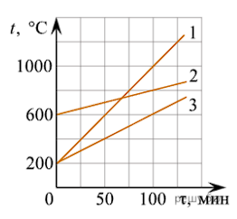
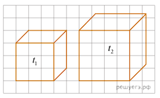
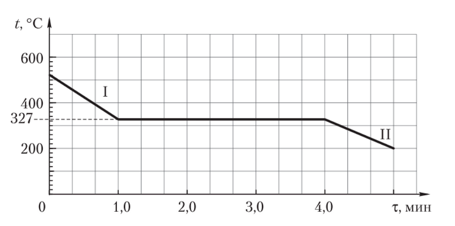
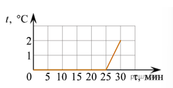
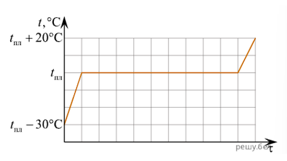
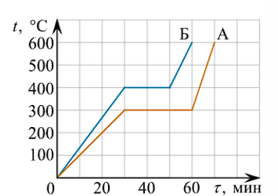
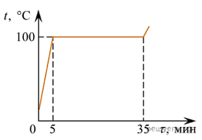

ДЗ 17
Количество теплоты. Уравнение теплового баланса. 8 класс повторение
Выберите вариант ответа или введите полученное числовое значение.
Задача 1
Вид теплообмена, который сопровождается переносом вещества:
Решение:
1 Овет: конвекция
Задача 2
Удельная теплоемкость железа $c = 460\text{ }\frac{\text{Дж}}{\text{кг}\cdot\text{К}}$. Это означает, что:
Решение:
1 Ответ: для нагревания 1 кг железа на 1 градус потребуется 460 Дж
Задача 3
Если при остывании вещества массой $m = 3000\text{ г}$ на $\Delta T = 2,00\text{ К}$ выделилось 2340 Дж теплоты, то удельная теплоемкость вещества составляет:
Решение:
Задача 2
1. Запишем дано и переведем величины в СИ:
1. Масса вещества: $m = 3000\text{ г} = 3\text{ кг}$
2. Изменение температуры: $\Delta T = 2,00\text{ К}$
3. Выделившееся количество теплоты: $Q = 2340\text{ Дж}$
2. Используем формулу количества теплоты при остывании:
3. Выразим и найдем удельную теплоемкость c:
1. Запишем дано и переведем величины в СИ:
1. Масса вещества: $m = 3000\text{ г} = 3\text{ кг}$
2. Изменение температуры: $\Delta T = 2,00\text{ К}$
3. Выделившееся количество теплоты: $Q = 2340\text{ Дж}$
2. Используем формулу количества теплоты при остывании:
$$Q = c \cdot m \cdot \Delta T$$
где $c$ — удельная теплоемкость вещества.3. Выразим и найдем удельную теплоемкость c:
$$c = \frac{Q}{m \cdot \Delta T}$$
$$c = \frac{2340}{3 \cdot 2,00} = \frac{2340}{6} = 390\text{ }\frac{\text{Дж}}{\text{кг}\cdot\text{К}}$$
Задача 4
На рисунке изображён график зависимости температуры $t$ от времени $\tau$ для трёх тел (1, 2 и 3) одинаковой массы, помещённых в печь. Если каждому из тел ежесекундно сообщалось одно и то же количество теплоты, то для удельных теплоёмкостей веществ $c_1$, $c_2$ и $c_3$ этих тел выполняется соотношение:

Решение:
Удельная теплоемкость определяется формулой $c = \frac{Q}{m\Delta t}$. Поскольку массы тел одинаковы и тела получили одинаковое количество теплоты, то зависимость удельной теплоемкости от изменения температуры обратно пропорциональна. Из графика видно, что изменения температуры связаны соотношением: $\Delta t_2 < \Delta t_3 < \Delta t_1$. Следовательно, для удельных теплоемкостей веществ выполняется соотношение $c_1 < c_3 < c_2$.
Задача 5
Два однородных кубика (см. рис.), изготовленные из одинакового материала, привели в контакт. Если начальная температура первого кубика $t_1 = 1,0\text{ }^\circ\text{C}$, а второго — $t_2 = 92\text{ }^\circ\text{C}$, то при отсутствии теплообмена с окружающей средой установившаяся температура $t$ кубиков равна ... °С.

Решение:
Решение.
Из рисунка видно, что ребро первого кубика $a_1 = 3\text{ клетки}$, а ребро второго $a_2 = 4\text{ клетки}$. Тогда объем кубика: $V = a^3$. Пусть $\rho$ — это плотность кубиков, тогда их масса: $m = \rho V$
Уравнение теплового баланса имеет вид:
Из рисунка видно, что ребро первого кубика $a_1 = 3\text{ клетки}$, а ребро второго $a_2 = 4\text{ клетки}$. Тогда объем кубика: $V = a^3$. Пусть $\rho$ — это плотность кубиков, тогда их масса: $m = \rho V$
Уравнение теплового баланса имеет вид:
$$Q_1 = Q_2 \Leftrightarrow c m_1 (t - t_1) = c m_2 (t_2 - t) \Leftrightarrow a_1^3 (t - t_1) = a_2^3 (t_2 - t)$$
Выразим отсюда установившуюся температуру:
$$t = \frac{a_2^3 t_2 + a_1^3 t_1}{a_1^3 + a_2^3} = \frac{64 \cdot 365 + 27 \cdot 274}{27 + 64} = 338\text{ К} = 65\text{ }^\circ\text{C}$$
Ответ: 65.
Задача 6
Объем воздуха $60\text{ м}^3$, удельная теплоемкость $1000\text{ Дж}/(\text{кг}\cdot^\circ\text{C})$, плотность воздуха $1,29\text{ кг}/\text{м}^3$. Какое количество теплоты необходимо, чтобы нагреть его на $22\text{ }^\circ\text{C}$?
Решение:
Подробное решение задачи 755
Дано:
• Объем воздуха: $V = 60\text{ м}^3$
• Удельная теплоемкость воздуха: $c = 1000\text{ Дж}/(\text{кг}\cdot^\circ\text{C})$
• Плотность воздуха: $\rho = 1,29\text{ кг}/\text{м}^3$
• Изменение температуры: $\Delta t = 22\text{ }^\circ\text{C}$
Решение:
1. Находим массу воздуха ($m$), умножив его плотность на объем:
• $1\,702,8\text{ кДж}$
• $\approx 1,7\text{ МДж}$
Дано:
• Объем воздуха: $V = 60\text{ м}^3$
• Удельная теплоемкость воздуха: $c = 1000\text{ Дж}/(\text{кг}\cdot^\circ\text{C})$
• Плотность воздуха: $\rho = 1,29\text{ кг}/\text{м}^3$
• Изменение температуры: $\Delta t = 22\text{ }^\circ\text{C}$
Решение:
1. Находим массу воздуха ($m$), умножив его плотность на объем:
$$m = \rho \cdot V$$
$$m = 1,29\text{ кг}/\text{м}^3 \cdot 60\text{ м}^3 = 77,4\text{ кг}$$
2. Рассчитываем количество теплоты ($Q$), необходимое для нагревания этой массы:
$$Q = c \cdot m \cdot \Delta t$$
$$Q = 1000\text{ }\frac{\text{Дж}}{\text{кг}\cdot^\circ\text{C}} \cdot 77,4\text{ кг} \cdot 22\text{ }^\circ\text{C} = 1\,702\,800\text{ Дж}$$
Для удобства ответ можно перевести в килоджоули или мегаджоули:• $1\,702,8\text{ кДж}$
• $\approx 1,7\text{ МДж}$
Задача 7
В медную кастрюлю массой 2,5 кг налито 8 кг воды при 10 °С. Какое количество теплоты необходимо, чтобы воду в кастрюле нагреть до кипения?
Решение:
Решение 758
Дано:
• $m_1 = 2,5\text{ кг}$ (масса кастрюли)
• $m_2 = 8\text{ кг}$ (масса воды)
• $t_1 = 10\text{ }^\circ\text{C},\; t_2 = 100\text{ }^\circ\text{C} \rightarrow \Delta t = 90\text{ }^\circ\text{C}$
• $c_1 = 380\text{ Дж}/(\text{кг}\cdot^\circ\text{C})$ (удельная теплоемкость меди)
• $c_2 = 4200\text{ Дж}/(\text{кг}\cdot^\circ\text{C})$ (удельная теплоемкость воды)
Когда мы нагреваем воду в кастрюле, тепло получает и сама кастрюля, и налитая в нее вода. Поэтому общее количество теплоты складывается из двух частей: $Q = Q_\text{кастрюли} + Q_\text{воды}$.
1. Найдем изменение температуры ($\Delta t$):
• $3\,109,5\text{ кДж}$
• $\approx 3,11\text{ МДж}$
Дано:
• $m_1 = 2,5\text{ кг}$ (масса кастрюли)
• $m_2 = 8\text{ кг}$ (масса воды)
• $t_1 = 10\text{ }^\circ\text{C},\; t_2 = 100\text{ }^\circ\text{C} \rightarrow \Delta t = 90\text{ }^\circ\text{C}$
• $c_1 = 380\text{ Дж}/(\text{кг}\cdot^\circ\text{C})$ (удельная теплоемкость меди)
• $c_2 = 4200\text{ Дж}/(\text{кг}\cdot^\circ\text{C})$ (удельная теплоемкость воды)
Когда мы нагреваем воду в кастрюле, тепло получает и сама кастрюля, и налитая в нее вода. Поэтому общее количество теплоты складывается из двух частей: $Q = Q_\text{кастрюли} + Q_\text{воды}$.
1. Найдем изменение температуры ($\Delta t$):
$$\Delta t = t_2 - t_1 = 100\text{ }^\circ\text{C} - 10\text{ }^\circ\text{C} = 90\text{ }^\circ\text{C}$$
2. Рассчитаем количество теплоты для нагрева кастрюли ($Q_\text{кастрюли}$):
$$Q_\text{кастрюли} = c_\text{меди} \cdot m_\text{кастрюли} \cdot \Delta t$$
$$Q_\text{кастрюли} = 380 \cdot 2,5 \cdot 90 = 85\,500\text{ Дж}$$
3. Рассчитаем количество теплоты для нагрева воды ($Q_\text{воды}$):
$$Q_\text{воды} = c_\text{воды} \cdot m_\text{воды} \cdot \Delta t$$
$$Q_\text{воды} = 4200 \cdot 8 \cdot 90 = 3\,024\,000\text{ Дж}$$
$$Q = 85\,500 + 3\,024\,000 = 3\,109\,500\text{ Дж}$$
В более крупных единицах измерения:• $3\,109,5\text{ кДж}$
• $\approx 3,11\text{ МДж}$
Задача 8
Какова будет температура смеси, если смешать 600 г воды при 80 °С с 200 г воды при 20 °С?
Решение:
Решение задачи 763
Дано:
• $m_1 = 600\text{ г} = 0,6\text{ кг}$ (горячая вода)
• $t_1 = 80\text{ }^\circ\text{C}$
• $m_2 = 200\text{ г} = 0,2\text{ кг}$ (холодная вода)
• $t_2 = 200\text{ г} \rightarrow 20\text{ }^\circ\text{C}$
• $c = 4200\text{ Дж}/(\text{кг}\cdot^\circ\text{C})$ (удельная теплоемкость воды)
• Конечная температура смеси: $t - ?$
Решение:
1. Запишем уравнение теплового баланса в виде суммы количеств теплоты:
При отсутствии теплопотерь в окружающую среду сумма всех полученных и отданных телами количеств теплоты равна нулю:
1. Для горячей воды: $Q_1 = c \cdot m_1 \cdot (t - t_1)$
2. Для холодной воды: $Q_2 = c \cdot m_2 \cdot (t - t_2)$
3. Подставляем выражения в уравнение теплового баланса:
Дано:
• $m_1 = 600\text{ г} = 0,6\text{ кг}$ (горячая вода)
• $t_1 = 80\text{ }^\circ\text{C}$
• $m_2 = 200\text{ г} = 0,2\text{ кг}$ (холодная вода)
• $t_2 = 200\text{ г} \rightarrow 20\text{ }^\circ\text{C}$
• $c = 4200\text{ Дж}/(\text{кг}\cdot^\circ\text{C})$ (удельная теплоемкость воды)
• Конечная температура смеси: $t - ?$
Решение:
1. Запишем уравнение теплового баланса в виде суммы количеств теплоты:
При отсутствии теплопотерь в окружающую среду сумма всех полученных и отданных телами количеств теплоты равна нулю:
$$Q_1 + Q_2 = 0$$
2. Расписываем каждое количество теплоты (всегда из конечной температуры $t$ вычитаем начальную):1. Для горячей воды: $Q_1 = c \cdot m_1 \cdot (t - t_1)$
2. Для холодной воды: $Q_2 = c \cdot m_2 \cdot (t - t_2)$
3. Подставляем выражения в уравнение теплового баланса:
$$c \cdot m_1 \cdot (t - t_1) + c \cdot m_2 \cdot (t - t_2) = 0$$
4. Разделим обе части уравнения на $c$ (так как удельная теплоемкость одинакова):
$$m_1 \cdot (t - t_1) + m_2 \cdot (t - t_2) = 0$$
5. Подставим численные значения масс и начальных температур:
$$0,6 \cdot (t - 80) + 0,2 \cdot (t - 20) = 0$$
$$0,6t - 48 + 0,2t - 4 = 0$$
$$t = \frac{52}{0,8} = 65\text{ }^\circ\text{C}$$
Задача 9
Медный калориметр весом 100 г вмещает 738 г воды, температура которой 15 °С. В этот калориметр опустили 200 г меди при температуре 100 °С, после чего температура калориметра поднялась до 17 °С. Какова удельная теплоемкость меди?
Решение:
Решение задачи 772 через сумму количеств теплоты
В процессе теплообмена участвуют три тела: медный калориметр, вода в нем и опущенный кусок меди.
Дано:
• $m_\text{кал} = 100\text{ г} = 0,1\text{ кг}$ (масса калориметра)
• $m_\text{воды} = 738\text{ г} = 0,738\text{ кг}$ (масса воды)
• $t_1 = 15\text{ }^\circ\text{C}$ (начальная температура калориметра и воды)
• $m_\text{меди} = 200\text{ г} = 0,2\text{ кг}$ (масса куска меди)
• $t_2 = 100\text{ }^\circ\text{C}$ (начальная температура меди)
• $t = 17\text{ }^\circ\text{C}$ (конечная температура смеси)
• $c_\text{воды} = 4200\text{ }\frac{\text{Дж}}{\text{кг}\cdot^\circ\text{C}}$
• $c_\text{меди} - ?$
1. Запишем уравнение теплового баланса в виде суммы количеств теплоты:
1. Для калориметра: $Q_\text{кал} = c_\text{меди} \cdot m_\text{кал} \cdot (t - t_1)$
2. Для воды: $Q_\text{воды} = c_\text{воды} \cdot m_\text{воды} \cdot (t - t_1)$
3. Для куска меди: $Q_\text{меди} = c_\text{меди} \cdot m_\text{меди} \cdot (t - t_2)$
3. Подставим численные значения:
1. $Q_\text{кал} = c_\text{меди} \cdot 0,1 \cdot (17 - 15) = 0,2 \cdot c_\text{меди}$
2. $Q_\text{воды} = 4200 \cdot 0,738 \cdot (17 - 15) = 4200 \cdot 0,738 \cdot 2 = 6199,2$
3. $Q_\text{меди} = c_\text{меди} \cdot 0,2 \cdot (17 - 100) = c_\text{меди} \cdot 0,2 \cdot (-83) = -16,6 \cdot c_\text{меди}$
4. Составим общее уравнение и найдем $c_\text{меди}$:
В процессе теплообмена участвуют три тела: медный калориметр, вода в нем и опущенный кусок меди.
Дано:
• $m_\text{кал} = 100\text{ г} = 0,1\text{ кг}$ (масса калориметра)
• $m_\text{воды} = 738\text{ г} = 0,738\text{ кг}$ (масса воды)
• $t_1 = 15\text{ }^\circ\text{C}$ (начальная температура калориметра и воды)
• $m_\text{меди} = 200\text{ г} = 0,2\text{ кг}$ (масса куска меди)
• $t_2 = 100\text{ }^\circ\text{C}$ (начальная температура меди)
• $t = 17\text{ }^\circ\text{C}$ (конечная температура смеси)
• $c_\text{воды} = 4200\text{ }\frac{\text{Дж}}{\text{кг}\cdot^\circ\text{C}}$
• $c_\text{меди} - ?$
1. Запишем уравнение теплового баланса в виде суммы количеств теплоты:
$$Q_\text{кал} + Q_\text{воды} + Q_\text{меди} = 0$$
2. Распишем каждое количество теплоты (из конечной температуры $t$ вычитаем начальную):1. Для калориметра: $Q_\text{кал} = c_\text{меди} \cdot m_\text{кал} \cdot (t - t_1)$
2. Для воды: $Q_\text{воды} = c_\text{воды} \cdot m_\text{воды} \cdot (t - t_1)$
3. Для куска меди: $Q_\text{меди} = c_\text{меди} \cdot m_\text{меди} \cdot (t - t_2)$
3. Подставим численные значения:
1. $Q_\text{кал} = c_\text{меди} \cdot 0,1 \cdot (17 - 15) = 0,2 \cdot c_\text{меди}$
2. $Q_\text{воды} = 4200 \cdot 0,738 \cdot (17 - 15) = 4200 \cdot 0,738 \cdot 2 = 6199,2$
3. $Q_\text{меди} = c_\text{меди} \cdot 0,2 \cdot (17 - 100) = c_\text{меди} \cdot 0,2 \cdot (-83) = -16,6 \cdot c_\text{меди}$
4. Составим общее уравнение и найдем $c_\text{меди}$:
$$0,2 \cdot c_\text{меди} + 6199,2 - 16,6 \cdot c_\text{меди} = 0$$
$$-16,4 \cdot c_\text{меди} = -6199,2$$
$$c_\text{меди} = \frac{-6199,2}{-16,4} = 380\text{ }\frac{\text{Дж}}{\text{кг}\cdot^\circ\text{C}}$$
Задача 10
Смешали три жидкости массами $m_2 = 2m_1$, $m_3 = 2m_2$ и разной температуры $T_1 = 300\text{ К}$, $T_2 = 320\text{ К}$, $T_3 = 280\text{ К}$. Удельные теплоемкости жидкостей $c_2 = 2c_1$, $c_3 = 1,5c_1$, где $c_1$ — удельная теплоемкость жидкости массой $m_1$. Температура $\Theta$ смеси, которая установится в сосуде, равна:
Решение:
Решение Задачи 1
решение
Система жидкостей теплоизолирована и суммарная внутренняя энергия системы не изменяется:
Если $\Theta$ — температура смеси, которая установится в сосуде, то:
решение
Система жидкостей теплоизолирована и суммарная внутренняя энергия системы не изменяется:
$$Q_1 + Q_2 + Q_3 = 0,$$
где $Q_1$, $Q_2$, $Q_3$ — количества теплоты, получаемые (или отдаваемые) каждой жидкостью при теплообмене.Если $\Theta$ — температура смеси, которая установится в сосуде, то:
$$Q_1 = c_1 m_1 (\Theta - T_1);$$
$$Q_2 = c_2 m_2 (\Theta - T_2) = 2c_1 \cdot 2m_1 (\Theta - T_2);$$
$$Q_3 = c_3 m_3 (\Theta - T_3) = 1,5c_1 \cdot 4m_1 (\Theta - T_3).$$
Значит, $c_1 m_1 (\Theta - T_1) + 4c_1 m_1 (\Theta - T_2) + 6c_1 m_1 (\Theta - T_3) = 0$, откуда
$$\Theta = \frac{T_1 + 4T_2 + 6T_3}{1 + 4 + 6} = \frac{300\text{ К} + 4 \cdot 320\text{ К} + 6 \cdot 280\text{ К}}{11} = 296\text{ К}.$$
Задача 11
Для приготовления ванны вместимостью $V = 180\text{ л}$ смешивают горячую воду с холодной, температуры которых соответственно $t_1 = 55\text{ }^\circ\text{C}$ и $t_2 = 10\text{ }^\circ\text{C}$. Если окончательная температура воды должна быть $\Theta = 40\text{ }^\circ\text{C}$, то необходимо, чтобы объемы горячей $V_1$ и холодной $V_2$ воды были равны:
Решение:
Задача 2
Решение
Система «горячая — холодная вода» теплоизолирована. Уравнение теплового баланса
Решение
Система «горячая — холодная вода» теплоизолирована. Уравнение теплового баланса
$$Q_1 + Q_2 = 0,$$
где $Q_1 = c m_1 (\Theta - t_1) = c V_1 \rho (\Theta - t_1)$ — количество теплоты, отданное горячей водой; $Q_2 = c m_2 (\Theta - t_2) = c V_2 \rho (\Theta - t_2)$ — полученное холодной водой; $c$ — удельная теплоемкость воды; $\rho$ — плотность воды; $V_1$ — объем горячей воды; $V_2 = V - V_1$ — объем холодной воды.
$$V_1 (\Theta - t_1) + (V - V_1)(\Theta - t_2) = 0;$$
$$V_1 = V \frac{\Theta - t_2}{t_1 - t_2} = \frac{180\text{ л} \cdot (40\text{ }^\circ\text{C} - 10\text{ }^\circ\text{C})}{55\text{ }^\circ\text{C} - 10\text{ }^\circ\text{C}} = 120\text{ л}.$$
Объем холодной воды $V_2 = 60,0\text{ л}$.
Задача 12
Какой объем занимает машинное масло в канистре, если при увеличении его температуры на $\Delta t_1 = 5,0\text{ }^\circ\text{C}$ поглощается такое же количество теплоты, какое требуется для увеличения температуры воды массой $m_2 = 5,0\text{ кг}$ на $\Delta t_2 = 1,8\text{ }^\circ\text{C}$? Плотность масла $\rho_\text{м} = 900\text{ }\frac{\text{кг}}{\text{м}^3}$. Удельная теплоемкость масла $c_\text{м} = 1670\text{ }\frac{\text{Дж}}{\text{кг}\cdot^\circ\text{C}}$.
Решение:
№115
Дано:
• $\Delta t_1 = 5,0\text{ }^\circ\text{C}$ — увеличение температуры масла
• $m_2 = 5,0\text{ кг}$ — масса воды
• $\Delta t_2 = 1,8\text{ }^\circ\text{C}$ — увеличение температуры воды
• $\rho_\text{м} = 900\text{ кг}/\text{м}^3$ — плотность масла
• $c_\text{м} = 1670\text{ Дж}/(\text{кг}\cdot^\circ\text{C})$ — удельная теплоемкость масла
• $c_\text{в} = 4200\text{ Дж}/(\text{кг}\cdot^\circ\text{C})$ — удельная теплоемкость воды
Решение:
1. Количество теплоты для нагревания воды:
Дано:
• $\Delta t_1 = 5,0\text{ }^\circ\text{C}$ — увеличение температуры масла
• $m_2 = 5,0\text{ кг}$ — масса воды
• $\Delta t_2 = 1,8\text{ }^\circ\text{C}$ — увеличение температуры воды
• $\rho_\text{м} = 900\text{ кг}/\text{м}^3$ — плотность масла
• $c_\text{м} = 1670\text{ Дж}/(\text{кг}\cdot^\circ\text{C})$ — удельная теплоемкость масла
• $c_\text{в} = 4200\text{ Дж}/(\text{кг}\cdot^\circ\text{C})$ — удельная теплоемкость воды
Решение:
1. Количество теплоты для нагревания воды:
$$Q_\text{воды} = c_\text{в} \cdot m_2 \cdot \Delta t_2$$
2. Количество теплоты для нагревания масла:
$$Q_\text{масла} = c_\text{м} \cdot \rho_\text{м} \cdot V_\text{м} \cdot \Delta t_1$$
3. Приравниваем процессы ($Q_\text{масла} = Q_\text{воды}$):
$$c_\text{м} \cdot \rho_\text{м} \cdot V_\text{м} \cdot \Delta t_1 = c_\text{в} \cdot m_2 \cdot \Delta t_2$$
4. Вычисляем объем масла ($V_\text{м}$):
$$V_\text{м} = \frac{c_\text{в} \cdot m_2 \cdot \Delta t_2}{c_\text{м} \cdot \rho_\text{м} \cdot \Delta t_1}$$
Подставляем значения с $c_\text{в} = 4200$:
$$V_\text{м} = \frac{4200 \cdot 5,0 \cdot 1,8}{1670 \cdot 900 \cdot 5,0} = \frac{37800}{7515000} \approx 0,00503\text{ м}^3$$
$V_\text{м} \approx 0,00503\text{ м}^3$ (или 5, 03 л). При округлении до одной значащей цифры получается 0, 005 м$^3$ (5 л).
Задача 13
Какая масса древесного угля может заменить 60 т нефти?
Решение:
№793
Дано:
• $m_\text{н} = 60\text{ т}$ — масса нефти
• $q_\text{н} = 44\text{ МДж}/\text{кг}$ (или $4,4\cdot 10^7\text{ Дж}/\text{кг}$) — удельная теплота сгорания нефти
• $q_\text{у} = 29,7\text{ МДж}/\text{кг}$ (или $2,97\cdot 10^7\text{ Дж}/\text{кг}$) — удельная теплота сгорания древесного угля
1. Из условия равенства выделившейся теплоты ($Q_\text{у} = Q_\text{н}$):
Дано:
• $m_\text{н} = 60\text{ т}$ — масса нефти
• $q_\text{н} = 44\text{ МДж}/\text{кг}$ (или $4,4\cdot 10^7\text{ Дж}/\text{кг}$) — удельная теплота сгорания нефти
• $q_\text{у} = 29,7\text{ МДж}/\text{кг}$ (или $2,97\cdot 10^7\text{ Дж}/\text{кг}$) — удельная теплота сгорания древесного угля
1. Из условия равенства выделившейся теплоты ($Q_\text{у} = Q_\text{н}$):
$$q_\text{у} \cdot m_\text{у} = q_\text{н} \cdot m_\text{н}$$
2. Выразим массу древесного угля:
$$m_\text{у} = \frac{q_\text{н} \cdot m_\text{н}}{q_\text{у}}$$
3. Подставим значения:
$$m_\text{у} = \frac{44 \cdot 60}{29,7} = \frac{2640}{29,7} \approx 88,89\text{ т}$$
Ответ:88,9 или 89т
Задача 14
При полном сгорании керосина объемом $V = 1,00\text{ л}$ выделяется количество теплоты $Q = 34,5\text{ МДж}$. Вычислите плотность керосина.
Решение:
№137
Дано:
• $V = 1,00\text{ л} = 0,001\text{ м}^3$ — объем керосина
• $Q = 34,5\text{ МДж} = 34,5 \cdot 10^6\text{ Дж}$ — выделившееся количество теплоты
• $q = 43\text{ МДж}/\text{кг} = 43 \cdot 10^6\text{ Дж}/\text{кг}$ (основное табличное значение, дающее стандартную плотность)
1. Формула количества теплоты при сгорании топлива:
Масса керосина равна произведению его плотности на объем:
Дано:
• $V = 1,00\text{ л} = 0,001\text{ м}^3$ — объем керосина
• $Q = 34,5\text{ МДж} = 34,5 \cdot 10^6\text{ Дж}$ — выделившееся количество теплоты
• $q = 43\text{ МДж}/\text{кг} = 43 \cdot 10^6\text{ Дж}/\text{кг}$ (основное табличное значение, дающее стандартную плотность)
1. Формула количества теплоты при сгорании топлива:
$$Q = q \cdot m$$
2. Связь массы с объемом и плотностью:Масса керосина равна произведению его плотности на объем:
$$m = \rho \cdot V$$
3. Подставим массу в первую формулу:
$$Q = q \cdot \rho \cdot V$$
4. Выразим и рассчитаем плотность ($\rho$):
$$\rho = \frac{Q}{q \cdot V}$$
1. Вариант 1 (если в ваших таблицах $q = 43\text{ МДж}/\text{кг}$):
$$\rho = \frac{34,5 \cdot 10^6}{43 \cdot 10^6 \cdot 0,001} = \frac{34,5}{0,043} \approx 802,3\text{ кг}/\text{м}^3$$
Задача 15
Начальная температура двух литров воды 20 °С. До какой температуры можно было бы нагреть эту воду при сжигании 10 г спирта? (Считать, что теплота сгорания спирта целиком пошла на нагревание воды.)
Решение:
№796
Дано:
• $V = 2\text{ л} \Longrightarrow m_\text{в} = 2\text{ кг}$ — масса воды (при плотности $\rho = 1000\text{ кг}/\text{м}^3$)
• $t_1 = 20\text{ }^\circ\text{C}$ — начальная температура воды
• $m_\text{сп} = 10\text{ г} = 0,01\text{ кг}$ — масса сожженного спирта
• $c_\text{в} = 4200\text{ Дж}/(\text{кг}\cdot^\circ\text{C})$ — удельная теплоемкость воды
• $q_\text{сп} = 2,7 \cdot 10^7\text{ Дж}/\text{кг}$ — удельная теплота сгорания спирта (из таблиц учебника Пёрышкина)
1. Процесс №1: Сгорание спирта.
Количество теплоты, выделившееся при полном сгорании спирта:
Количество теплоты, необходимое для нагревания воды от $t_1$ до конечной температуры $t_2$:
По условию задачи вся выделившаяся энергия целиком идет на нагревание воды ($Q_\text{выд} = Q_\text{погл}$):
Дано:
• $V = 2\text{ л} \Longrightarrow m_\text{в} = 2\text{ кг}$ — масса воды (при плотности $\rho = 1000\text{ кг}/\text{м}^3$)
• $t_1 = 20\text{ }^\circ\text{C}$ — начальная температура воды
• $m_\text{сп} = 10\text{ г} = 0,01\text{ кг}$ — масса сожженного спирта
• $c_\text{в} = 4200\text{ Дж}/(\text{кг}\cdot^\circ\text{C})$ — удельная теплоемкость воды
• $q_\text{сп} = 2,7 \cdot 10^7\text{ Дж}/\text{кг}$ — удельная теплота сгорания спирта (из таблиц учебника Пёрышкина)
1. Процесс №1: Сгорание спирта.
Количество теплоты, выделившееся при полном сгорании спирта:
$$Q_\text{выд} = q_\text{сп} \cdot m_\text{сп}$$
2. Процесс №2: Нагревание воды.Количество теплоты, необходимое для нагревания воды от $t_1$ до конечной температуры $t_2$:
$$Q_\text{погл} = c_\text{в} \cdot m_\text{в} \cdot (t_2 - t_1)$$
3. Сравнение энергий.По условию задачи вся выделившаяся энергия целиком идет на нагревание воды ($Q_\text{выд} = Q_\text{погл}$):
$$q_\text{сп} \cdot m_\text{сп} = c_\text{в} \cdot m_\text{в} \cdot (t_2 - t_1)$$
4. Выразим изменение температуры ($\Delta t = t_2 - t_1$):
$$t_2 - t_1 = \frac{q_\text{сп} \cdot m_\text{сп}}{c_\text{в} \cdot m_\text{в}}$$
Подставим числа:
$$t_2 - t_1 = \frac{2,7 \cdot 10^7 \cdot 0,01}{4200 \cdot 2} = \frac{270\,000}{8400} \approx 32,14\text{ }^\circ\text{C}$$
5. Найдем конечную температуру ($t_2$):
$$t_2 = t_1 + 32,14\text{ }^\circ\text{C} = 20\text{ }^\circ\text{C} + 32,14\text{ }^\circ\text{C} \approx 52,1\text{ }^\circ\text{C}$$
Ответ: 52
Задача 16
Какой объем природного газа сгорает в газовой горелке кухонной плиты при нагревании воды объемом $V_1 = 10\text{ л}$ от температуры $t_1 = 20\text{ }^\circ\text{C}$ до температуры $t_2 = 100\text{ }^\circ\text{C}$, если на нагревание воды идет 60 % выделяющейся при сгорании газа энергии?
Решение:
№133
Дано:
• $V_1 = 10\text{ л} \Longrightarrow m_1 = 10\text{ кг}$ — масса нагреваемой воды (при плотности $\rho = 1000\text{ кг}/\text{м}^3$)
• $t_1 = 20\text{ }^\circ\text{C}$ — начальная температура воды
• $t_2 = 100\text{ }^\circ\text{C}$ — конечная температура воды
• $\eta = 60\% = 0,6$ — коэффициент полезного действия (КПД) горелки
• $c_\text{в} = 4200\text{ Дж}/(\text{кг}\cdot^\circ\text{C})$ — удельная теплоемкость воды
• $q_\text{газа} = 35,5\text{ МДж}/\text{м}^3 = 35,5 \cdot 10^6\text{ Дж}/\text{м}^3$ — удельная теплота сгорания природного газа
1. Запишем базовую формулу КПД ($\eta$):
Коэффициент полезного действия показывает, какая часть общего выделившегося тепла пошла на полезную работу:
1. Полезное количество теплоты ($Q_\text{пол}$) — это энергия, которая пошла на нагревание воды:
Подставим выражения для теплоты обратно в формулу КПД:
Дано:
• $V_1 = 10\text{ л} \Longrightarrow m_1 = 10\text{ кг}$ — масса нагреваемой воды (при плотности $\rho = 1000\text{ кг}/\text{м}^3$)
• $t_1 = 20\text{ }^\circ\text{C}$ — начальная температура воды
• $t_2 = 100\text{ }^\circ\text{C}$ — конечная температура воды
• $\eta = 60\% = 0,6$ — коэффициент полезного действия (КПД) горелки
• $c_\text{в} = 4200\text{ Дж}/(\text{кг}\cdot^\circ\text{C})$ — удельная теплоемкость воды
• $q_\text{газа} = 35,5\text{ МДж}/\text{м}^3 = 35,5 \cdot 10^6\text{ Дж}/\text{м}^3$ — удельная теплота сгорания природного газа
1. Запишем базовую формулу КПД ($\eta$):
Коэффициент полезного действия показывает, какая часть общего выделившегося тепла пошла на полезную работу:
$$\eta = \frac{Q_\text{пол}}{Q_\text{полн}}$$
2. Распишем каждую теплоту из формулы КПД отдельными процессами:1. Полезное количество теплоты ($Q_\text{пол}$) — это энергия, которая пошла на нагревание воды:
$$Q_\text{пол} = c_\text{в} \cdot m_1 \cdot (t_2 - t_1)$$
$$Q_\text{пол} = 4200 \cdot 10 \cdot (100 - 20) = 3\,360\,000\text{ Дж}$$
2. Полное количество теплоты ($Q_\text{полн}$) — это вся энергия, которая выделилась при сгорании природного газа:
$$Q_\text{полн} = q_\text{газа} \cdot V_\text{газа}$$
3. Свяжем всё вместе и выразим искомый объем газа ($V_\text{газа}$):Подставим выражения для теплоты обратно в формулу КПД:
$$\eta = \frac{c_\text{в} \cdot m_1 \cdot (t_2 - t_1)}{q_\text{газа} \cdot V_\text{газа}}$$
Отсюда выразим полный объем сгоревшего газа:
$$V_\text{газа} = \frac{c_\text{в} \cdot m_1 \cdot (t_2 - t_1)}{\eta \cdot q_\text{газа}}$$
4. Проведем итоговый расчет:
$$V_\text{газа} = \frac{3\,360\,000}{0,6 \cdot 35,5 \cdot 10^6} = \frac{3\,360\,000}{21\,300\,000} \approx 0,158\text{ м}^3$$
$V_\text{газа} \approx 0,16\text{ м}^3$.
Задача 17
В автомобильном двигателе за время $t = 10\text{ с}$ сгорает дизельное топливо массой $m = 24\text{ г}$. Какую полезную мощность развивает двигатель автомобиля, если его коэффициент полезного действия (КПД) $\eta = 40\text{ }\%$?
Решение:
Пример 2
Дано:
$t = 10\text{ с}$
$m = 24\text{ г} = 0,024\text{ кг}$
$\eta = 40\% = 0,40$
$q = 4,2 \cdot 10^7\text{ }\frac{\text{Дж}}{\text{кг}}$
$P_\text{пол} - ?$
Решение.
По определению КПД $\eta = \frac{A_\text{пол}}{A_\text{сов}}$.
Полезная работа $A_\text{пол} = P_\text{пол} t$.
Совершенная работа $A_\text{сов} = Q_\text{сг}$; $Q_\text{сг} = q m$.
Тогда $\eta = \frac{P_\text{пол} t}{q m}$, откуда $P_\text{пол} = \frac{\eta q m}{t}$.
Дано:
$t = 10\text{ с}$
$m = 24\text{ г} = 0,024\text{ кг}$
$\eta = 40\% = 0,40$
$q = 4,2 \cdot 10^7\text{ }\frac{\text{Дж}}{\text{кг}}$
$P_\text{пол} - ?$
Решение.
По определению КПД $\eta = \frac{A_\text{пол}}{A_\text{сов}}$.
Полезная работа $A_\text{пол} = P_\text{пол} t$.
Совершенная работа $A_\text{сов} = Q_\text{сг}$; $Q_\text{сг} = q m$.
Тогда $\eta = \frac{P_\text{пол} t}{q m}$, откуда $P_\text{пол} = \frac{\eta q m}{t}$.
$$P_\text{пол} = \frac{0,40 \cdot 4,2 \cdot 10^7\text{ }\frac{\text{Дж}}{\text{кг}} \cdot 0,024\text{ кг}}{10\text{ с}} = 40\text{ кВт}.$$
Ответ: $P_\text{пол} = 40\text{ кВт}$.
Задача 18
При сжигании бензина в автомобильном двигателе за время $t = 2,0\text{ с}$ потери энергии составили $Q = 0,30\text{ МДж}$, при этом двигатель развил мощность $P = 50\text{ кВт}$. Определите КПД двигателя.
Решение:
№144
Дано:
• $t = 2,0\text{ с}$ — время работы двигателя
• $Q_\text{пот} = 0,30\text{ МДж} = 300\,000\text{ Дж}$ — потери энергии
• $P = 50\text{ кВт} = 50\,000\text{ Вт}$ — полезная мощность двигателя
Решение:
1. Находим полезную работу ($A_\text{пол}$), совершенную двигателем за это время:
Дано:
• $t = 2,0\text{ с}$ — время работы двигателя
• $Q_\text{пот} = 0,30\text{ МДж} = 300\,000\text{ Дж}$ — потери энергии
• $P = 50\text{ кВт} = 50\,000\text{ Вт}$ — полезная мощность двигателя
Решение:
1. Находим полезную работу ($A_\text{пол}$), совершенную двигателем за это время:
$$A_\text{пол} = P \cdot t$$
$$A_\text{пол} = 50 \cdot 10^3\text{ Вт} \cdot 2,0\text{ с} = 100 \cdot 10^3\text{ Дж} = 100\text{ кДж}$$
2. Находим полную (затраченную) энергию ($Q_\text{затр}$), выделившуюся при сжигании бензина. Она равна сумме полезной работы и потерь:
$$Q_\text{затр} = A_\text{пол} + Q_\text{пот}$$
$$Q_\text{затр} = 100\text{ кДж} + 300\text{ кДж} = 400\text{ кДж}$$
3. Вычисляем коэффициент полезного действия (КПД) двигателя:
$$\eta = \frac{A_\text{пол}}{Q_\text{затр}}$$
$$\eta = \frac{100\text{ кДж}}{400\text{ кДж}} = 0,25\text{ (или 25%)}$$
Задача 19
Кусок льда массой $m = 2,0\text{ кг}$ при температуре $t = -20\text{ }^\circ\text{C}$ нагрели, сообщив ему количество теплоты $Q = 1,26\text{ МДж}$. Температура вещества после нагревания:
Решение:
Задача 4
Дано:
• Масса льда: $m = 2,0\text{ кг}$
• Начальная температура: $t_1 = -20\text{ }^\circ\text{C}$
• Сообщенное количество теплоты: $Q = 1,26\text{ МДж} = 1\,260\,000\text{ Дж}$
• Удельная теплоемкость льда: $c_\text{льда} = 2100\text{ Дж}/(\text{кг}\cdot^\circ\text{C})$
• Удельная теплота плавления льда: $\lambda = 3,3 \cdot 10^5\text{ Дж}/\text{кг}$
• Удельная теплоемкость воды: $c_\text{воды} = 4200\text{ Дж}/(\text{кг}\cdot^\circ\text{C})$
Общее количество теплоты $Q$, переданное системе, складывается из затрат на каждый последовательный этап:
• $Q_1$ — теплота на нагревание льда от $-20\text{ }^\circ\text{C}$ до $0\text{ }^\circ\text{C}$.
• $Q_2$ — теплота на плавление льда при $0\text{ }^\circ\text{C}$.
• $Q_3$ — теплота на нагревание получившейся воды от $0\text{ }^\circ\text{C}$ до конечной температуры $t_2$.
Идем последовательно от общего количества теплоты $Q = 1\,260\,000\text{ Дж}$:
1. Находим количество теплоты для первого этапа:
Дано:
• Масса льда: $m = 2,0\text{ кг}$
• Начальная температура: $t_1 = -20\text{ }^\circ\text{C}$
• Сообщенное количество теплоты: $Q = 1,26\text{ МДж} = 1\,260\,000\text{ Дж}$
• Удельная теплоемкость льда: $c_\text{льда} = 2100\text{ Дж}/(\text{кг}\cdot^\circ\text{C})$
• Удельная теплота плавления льда: $\lambda = 3,3 \cdot 10^5\text{ Дж}/\text{кг}$
• Удельная теплоемкость воды: $c_\text{воды} = 4200\text{ Дж}/(\text{кг}\cdot^\circ\text{C})$
Общее количество теплоты $Q$, переданное системе, складывается из затрат на каждый последовательный этап:
$$Q = Q_1 + Q_2 + Q_3$$
Где:• $Q_1$ — теплота на нагревание льда от $-20\text{ }^\circ\text{C}$ до $0\text{ }^\circ\text{C}$.
• $Q_2$ — теплота на плавление льда при $0\text{ }^\circ\text{C}$.
• $Q_3$ — теплота на нагревание получившейся воды от $0\text{ }^\circ\text{C}$ до конечной температуры $t_2$.
Идем последовательно от общего количества теплоты $Q = 1\,260\,000\text{ Дж}$:
1. Находим количество теплоты для первого этапа:
$$Q_1 = c_\text{льда} \cdot m \cdot (0 - t_1) = 2100 \cdot 2,0 \cdot (0 - (-20)) = 84\,000\text{ Дж}$$
2. Находим количество теплоты для второго этапа:
$$Q_2 = \lambda \cdot m = 330\,000 \cdot 2,0 = 660\,000\text{ Дж}$$
3. Теперь выразим из общего уравнения количество теплоты $Q_3$, которое идет на нагревание воды:
$$Q_3 = Q - Q_1 - Q_2$$
$$Q_3 = 1\,260\,000 - 84\,000 - 660\,000 = 516\,000\text{ Дж}$$
4. Расписываем формулу для $Q_3$ и находим конечную температуру $t_2$:
$$Q_3 = c_\text{воды} \cdot m \cdot (t_2 - 0)$$
$$t_2 = \frac{516\,000}{8400} \approx 61,4\text{ }^\circ\text{C} \approx 61\text{ }^\circ\text{C}$$
Задача 20
Если начальная температура воды и эфира $T_1 = 273\text{ К}$ и теплообмен происходит только между эфиром и водой ($\lambda_\text{льда} = 3,3\cdot 10^5\text{ Дж}/\text{кг}$, $L = 84\text{ кДж}/\text{кг}$), то в результате испарения эфира массой $m = 100\text{ г}$ можно превратить в лед массу воды:
Решение:
Задача 5
Дано:
• Начальная температура: $T_1 = 273\text{ К} = 0\text{ }^\circ\text{C}$ (температура плавления/кристаллизации воды)
• Удельная теплота плавления (кристаллизации) льда: $\lambda_\text{льда} = 3,3 \cdot 10^5\text{ Дж}/\text{кг}$
• Удельная теплота парообразования эфира: $L = 84\text{ кДж}/\text{кг} = 84 \cdot 10^3\text{ Дж}/\text{кг}$
• Масса испарившегося эфира: $m_\text{эфира} = 100\text{ г} = 0,1\text{ кг}$
Запишем уравнение теплового баланса в строгом термодинамическом виде: сумма количеств теплоты в замкнутой системе равна нулю.
• $Q_1$ — количество теплоты, полученное эфиром при испарении (процесс идет с поглощением тепла, поэтому $Q_1 > 0$):
Дано:
• Начальная температура: $T_1 = 273\text{ К} = 0\text{ }^\circ\text{C}$ (температура плавления/кристаллизации воды)
• Удельная теплота плавления (кристаллизации) льда: $\lambda_\text{льда} = 3,3 \cdot 10^5\text{ Дж}/\text{кг}$
• Удельная теплота парообразования эфира: $L = 84\text{ кДж}/\text{кг} = 84 \cdot 10^3\text{ Дж}/\text{кг}$
• Масса испарившегося эфира: $m_\text{эфира} = 100\text{ г} = 0,1\text{ кг}$
Запишем уравнение теплового баланса в строгом термодинамическом виде: сумма количеств теплоты в замкнутой системе равна нулю.
$$Q_1 + Q_2 = 0$$
Где:• $Q_1$ — количество теплоты, полученное эфиром при испарении (процесс идет с поглощением тепла, поэтому $Q_1 > 0$):
$$Q_1 = L \cdot m_\text{эфира}$$
• $Q_2$ — количество теплоты, полученное водой при кристаллизации (процесс идет с выделением тепла, поэтому $Q_2 < 0$):
$$Q_2 = -\lambda_\text{льда} \cdot m_\text{воды}$$
1. Записываем уравнение с учетом знаков процессов:
$$L \cdot m_\text{эфира} + (-\lambda_\text{льда} \cdot m_\text{воды}) = 0$$
2. Переносим слагаемое с минусом в правую часть:
$$L \cdot m_\text{эфира} = \lambda_\text{льда} \cdot m_\text{воды}$$
3. Выражаем массу воды ($m_\text{воды}$):
$$m_\text{воды} = \frac{L \cdot m_\text{эфира}}{\lambda_\text{льда}}$$
$$m_\text{воды} = \frac{84 \cdot 10^3 \cdot 0,1}{3,3 \cdot 10^5} = \frac{8400}{330\,000} \approx 0,02545\text{ кг} \approx 25\text{ г}$$
Задача 21
Температура льда $t = 0,00\text{ }^\circ\text{C}$. Чтобы алюминиевый куб ($c_\text{Al} = 880\text{ }\frac{\text{Дж}}{\text{кг}\cdot\text{К}}$; $\rho_\text{Al} = 2700\text{ кг}/\text{м}^3$), положенный на лед, полностью в него погрузился, куб необходимо предварительно нагреть до температуры:
Решение:
Задача 6
Дано:
• Начальная температура льда: $t_\text{льда} = 0\text{ }^\circ\text{C}$
• Удельная теплоемкость алюминия: $c_\text{Al} = 880\text{ Дж}/(\text{кг}\cdot\text{К})$
• Плотность алюминия: $\rho_\text{Al} = 2700\text{ кг}/\text{м}^3$
• Удельная теплота плавления льда (из предыдущих задач): $\lambda = 3,3 \cdot 10^5\text{ Дж}/\text{кг}$
• Плотность льда (табличное значение): $\rho_\text{льда} = 900\text{ кг}/\text{м}^3$
Решение:
Чтобы куб полностью погрузился в лед, он должен растопить объем льда, равный собственному объему ($V$). Процесс прекратится, когда куб остынет до температуры плавления льда, то есть до $0\text{ }^\circ\text{C}$.
Запишем уравнение теплового баланса через сумму полученных теплот:
• $Q_1$ — количество теплоты, полученное алюминиевым кубом при охлаждении от искомой температуры $t_x$ до $0\text{ }^\circ\text{C}$ (так как куб отдает тепло, $Q_1 < 0$):
1. Подставляем выражения для $Q_1$ и $Q_2$ в исходное уравнение:
Дано:
• Начальная температура льда: $t_\text{льда} = 0\text{ }^\circ\text{C}$
• Удельная теплоемкость алюминия: $c_\text{Al} = 880\text{ Дж}/(\text{кг}\cdot\text{К})$
• Плотность алюминия: $\rho_\text{Al} = 2700\text{ кг}/\text{м}^3$
• Удельная теплота плавления льда (из предыдущих задач): $\lambda = 3,3 \cdot 10^5\text{ Дж}/\text{кг}$
• Плотность льда (табличное значение): $\rho_\text{льда} = 900\text{ кг}/\text{м}^3$
Решение:
Чтобы куб полностью погрузился в лед, он должен растопить объем льда, равный собственному объему ($V$). Процесс прекратится, когда куб остынет до температуры плавления льда, то есть до $0\text{ }^\circ\text{C}$.
Запишем уравнение теплового баланса через сумму полученных теплот:
$$Q_1 + Q_2 = 0$$
Где:• $Q_1$ — количество теплоты, полученное алюминиевым кубом при охлаждении от искомой температуры $t_x$ до $0\text{ }^\circ\text{C}$ (так как куб отдает тепло, $Q_1 < 0$):
$$Q_1 = c_\text{Al} \cdot m_\text{Al} \cdot (0 - t_x) = -c_\text{Al} \cdot \rho_\text{Al} \cdot V \cdot t_x$$
• $Q_2$ — количество теплоты, полученное льдом при плавлении (так как лед поглощает тепло, $Q_2 > 0$):
$$Q_2 = \lambda \cdot m_\text{льда} = \lambda \cdot \rho_\text{льда} \cdot V$$
Подстановка и расчет:1. Подставляем выражения для $Q_1$ и $Q_2$ в исходное уравнение:
$$-c_\text{Al} \cdot \rho_\text{Al} \cdot V \cdot t_x + \lambda \cdot \rho_\text{льда} \cdot V = 0$$
2. Разделим обе части уравнения на объем $V$ (он сокращается) и перенесем отрицательное слагаемое в правую часть:
$$\lambda \cdot \rho_\text{льда} = c_\text{Al} \cdot \rho_\text{Al} \cdot t_x$$
3. Выразим начальную температуру куба $t_x$:
$$t_x = \frac{\lambda \cdot \rho_\text{льда}}{c_\text{Al} \cdot \rho_\text{Al}}$$
4. Подставляем численные значения:
$$t_x = \frac{3,3 \cdot 10^5 \cdot 900}{880 \cdot 2700} = \frac{3,3 \cdot 10^5}{880 \cdot 3} = \frac{1,1 \cdot 10^5}{880} = \frac{110\,000}{880} = 125\text{ }^\circ\text{C}$$
Задача 22
Нагретую железную болванку массой $m_\text{ж} = 2,0\text{ кг}$ поставили на лед, имеющий температуру $t_\text{л} = -10\text{ }^\circ\text{C}$. В результате охлаждения болванки до температуры $t = 0\text{ }^\circ\text{C}$ под ней расплавилось $m_\text{л} = 150\text{ г}$ льда. До какой температуры была нагрета болванка? Потерями теплоты пренебречь.
Решение:
Пример 1
Дано:
$m_\text{ж} = 2,0\text{ кг}$
$t_\text{л} = -10\text{ }^\circ\text{C}$
$t = 0\text{ }^\circ\text{C}$
$m_\text{л} = 150\text{ г} = 0,150\text{ кг}$
$c_\text{л} = 2100\text{ }\frac{\text{Дж}}{\text{кг}\cdot^\circ\text{C}} = 2,1 \cdot 10^3\text{ }\frac{\text{Дж}}{\text{кг}\cdot^\circ\text{C}}$
$c_\text{ж} = 460\text{ }\frac{\text{Дж}}{\text{кг}\cdot^\circ\text{C}}$
$\lambda = 3,33 \cdot 10^5\text{ }\frac{\text{Дж}}{\text{кг}}$
$t_\text{ж} - ?$
Решение.
Запишем уравнение теплового баланса:
$Q_1 = c_\text{ж} \cdot m_\text{ж} (t_\text{ж} - t)$ — количество теплоты, отданное болванкой при охлаждении до температуры $t = 0\text{ }^\circ\text{C}$.
$Q_2 = c_\text{л} \cdot m_\text{л} (t - t_\text{л})$ — количество теплоты, полученное льдом при нагревании от температуры $t_\text{л} = -10\text{ }^\circ\text{C}$ до температуры $t = 0\text{ }^\circ\text{C}$.
$Q_3 = \lambda m_\text{л}$ — количество теплоты, необходимое для плавления льда.
Дано:
$m_\text{ж} = 2,0\text{ кг}$
$t_\text{л} = -10\text{ }^\circ\text{C}$
$t = 0\text{ }^\circ\text{C}$
$m_\text{л} = 150\text{ г} = 0,150\text{ кг}$
$c_\text{л} = 2100\text{ }\frac{\text{Дж}}{\text{кг}\cdot^\circ\text{C}} = 2,1 \cdot 10^3\text{ }\frac{\text{Дж}}{\text{кг}\cdot^\circ\text{C}}$
$c_\text{ж} = 460\text{ }\frac{\text{Дж}}{\text{кг}\cdot^\circ\text{C}}$
$\lambda = 3,33 \cdot 10^5\text{ }\frac{\text{Дж}}{\text{кг}}$
$t_\text{ж} - ?$
Решение.
Запишем уравнение теплового баланса:
$$Q_1 = Q_2 + Q_3,$$
где$Q_1 = c_\text{ж} \cdot m_\text{ж} (t_\text{ж} - t)$ — количество теплоты, отданное болванкой при охлаждении до температуры $t = 0\text{ }^\circ\text{C}$.
$Q_2 = c_\text{л} \cdot m_\text{л} (t - t_\text{л})$ — количество теплоты, полученное льдом при нагревании от температуры $t_\text{л} = -10\text{ }^\circ\text{C}$ до температуры $t = 0\text{ }^\circ\text{C}$.
$Q_3 = \lambda m_\text{л}$ — количество теплоты, необходимое для плавления льда.
$$c_\text{ж} \cdot m_\text{ж} (t_\text{ж} - t) = c_\text{л} \cdot m_\text{л} (t - t_\text{л}) + \lambda m_\text{л},\text{ так как } t = 0\text{ }^\circ\text{C},\text{ то}$$
$$t_\text{ж} = \frac{-c_\text{л} m_\text{л} t_\text{л} + \lambda m_\text{л}}{c_\text{ж} m_\text{ж}}.$$
$$t_\text{ж} = \frac{2,1 \cdot 10^3\text{ }\frac{\text{Дж}}{\text{кг}\cdot^\circ\text{C}} \cdot 0,150\text{ кг} \cdot 10\text{ }^\circ\text{C} + 3,33 \cdot 10^5\text{ }\frac{\text{Дж}}{\text{кг}} \cdot 0,150\text{ кг}}{460\text{ }\frac{\text{Дж}}{\text{кг}\cdot^\circ\text{C}} \cdot 2,0\text{ кг}} = 58\text{ }^\circ\text{C}.$$
Ответ: $t_\text{ж} = 58\text{ }^\circ\text{C}$.
Задача 23
Определите объем глицерина, если при его кристаллизации выделилось количество теплоты $|Q| = 240\text{ кДж}$. Плотность глицерина $\rho = 1200\text{ }\frac{\text{кг}}{\text{м}^3}$. Удельная теплота плавления глицерина $\lambda = 1,99\cdot 10^5\text{ }\frac{\text{Дж}}{\text{кг}}$.
Решение:
№162
Дано:
• Количество выделившейся теплоты по модулю: $|Q| = 240\text{ кДж} = 240 \cdot 10^3\text{ Дж}$
• Плотность глицерина: $\rho = 1200\text{ кг}/\text{м}^3$
• Удельная теплота плавления (кристаллизации) глицерина: $\lambda = 1,99 \cdot 10^5\text{ Дж}/\text{кг}$
1. Формула количества теплоты:
При кристаллизации вещества выделяется количество теплоты, равное:
2. Связь массы с объемом:
Масса вещества выражается через его плотность $\rho$ и объем $V$:
Подставим формулу массы в выражение для количества теплоты:
Дано:
• Количество выделившейся теплоты по модулю: $|Q| = 240\text{ кДж} = 240 \cdot 10^3\text{ Дж}$
• Плотность глицерина: $\rho = 1200\text{ кг}/\text{м}^3$
• Удельная теплота плавления (кристаллизации) глицерина: $\lambda = 1,99 \cdot 10^5\text{ Дж}/\text{кг}$
1. Формула количества теплоты:
При кристаллизации вещества выделяется количество теплоты, равное:
$$|Q| = \lambda \cdot m$$
где $m$ — масса глицерина.2. Связь массы с объемом:
Масса вещества выражается через его плотность $\rho$ и объем $V$:
$$m = \rho \cdot V$$
3. Вывод формулы для объема:Подставим формулу массы в выражение для количества теплоты:
$$|Q| = \lambda \cdot \rho \cdot V$$
Отсюда выразим искомый объем $V$:
$$V = \frac{|Q|}{\lambda \cdot \rho}$$
4. Вычисления:
$$V = \frac{240 \cdot 10^3}{1,99 \cdot 10^5 \cdot 1200}$$
$$V = \frac{240 \cdot 10^3}{2,388 \cdot 10^8} \approx 0,001005\text{ м}^3 \approx 1,01 \cdot 10^{-3}\text{ м}^3$$
Переведем значение в литры для наглядности (1 м³ = 1000 л):
$$V \approx 1\text{ л}$$
Задача 24
Для какого вещества построен схематический график зависимости температуры от времени (рис. 17)? К какому состоянию вещества относятся участки I и II графика?

Решение:
№164
Этот график построен для свинца, так как температура его кристаллизации (плавления) составляет 327 °С.
Анализ графика:
• Вещество: По горизонтальному участку графика видно, что фазовый переход происходит при температуре 327 °С. Согласно таблице температур плавления, это значение соответствует свинцу.
• Процесс: График идет вниз, значит, происходит охлаждение жидкого свинца, его кристаллизация (отверждение) и последующее охлаждение твердого вещества.
Состояние вещества на участках:
• Участок I: Вещество находится в жидком состоянии (происходит охлаждение жидкого свинца от 520 °С до температуры кристаллизации 327 °С).
• Участок II: Вещество находится в твердом состоянии (после полного затвердевания на горизонтальном участке твердый свинец охлаждается от 327 °С до 200 °С).
Этот график построен для свинца, так как температура его кристаллизации (плавления) составляет 327 °С.
Анализ графика:
• Вещество: По горизонтальному участку графика видно, что фазовый переход происходит при температуре 327 °С. Согласно таблице температур плавления, это значение соответствует свинцу.
• Процесс: График идет вниз, значит, происходит охлаждение жидкого свинца, его кристаллизация (отверждение) и последующее охлаждение твердого вещества.
Состояние вещества на участках:
• Участок I: Вещество находится в жидком состоянии (происходит охлаждение жидкого свинца от 520 °С до температуры кристаллизации 327 °С).
• Участок II: Вещество находится в твердом состоянии (после полного затвердевания на горизонтальном участке твердый свинец охлаждается от 327 °С до 200 °С).
Задача 25
Количество теплоты, необходимое для плавления цинка массой $m = 3,0\text{ кг}$, взятого при температуре $t = 0\text{ }^\circ\text{C}$, составляет (температура плавления цинка $t_\text{пл} = 420\text{ }^\circ\text{C}$, удельная теплоемкость $c = 400\text{ }\frac{\text{Дж}}{\text{кг}\cdot\text{К}}$, удельная теплота плавления $\lambda = 112\text{ кДж}/\text{кг}$):
Решение:
Задача 2
Дано:
• Масса цинка: $m = 3,0\text{ кг}$
• Начальная температура: $t = 0\text{ }^\circ\text{C}$
• Температура плавления цинка: $t_\text{пл} = 420\text{ }^\circ\text{C}$
• Удельная теплоемкость: $c = 400\text{ }\frac{\text{Дж}}{\text{кг}\cdot\text{К}}$
• Удельная теплота плавления: $\lambda = 112\text{ кДж}/\text{кг} = 112 \cdot 10^3\text{ Дж}/\text{кг}$
Решение:
Весь процесс состоит из двух последовательных этапов, для каждого из которых нужно рассчитать теплоту:
1. Нагревание твердого цинка до температуры плавления ($Q_1$):
Дано:
• Масса цинка: $m = 3,0\text{ кг}$
• Начальная температура: $t = 0\text{ }^\circ\text{C}$
• Температура плавления цинка: $t_\text{пл} = 420\text{ }^\circ\text{C}$
• Удельная теплоемкость: $c = 400\text{ }\frac{\text{Дж}}{\text{кг}\cdot\text{К}}$
• Удельная теплота плавления: $\lambda = 112\text{ кДж}/\text{кг} = 112 \cdot 10^3\text{ Дж}/\text{кг}$
Решение:
Весь процесс состоит из двух последовательных этапов, для каждого из которых нужно рассчитать теплоту:
1. Нагревание твердого цинка до температуры плавления ($Q_1$):
$$Q_1 = c \cdot m \cdot (t_\text{пл} - t)$$
$$Q_1 = 400 \cdot 3,0 \cdot (420 - 0) = 1200 \cdot 420 = 504\,000\text{ Дж} = 0,504\text{ МДж}$$
2. Плавление цинка ($Q_2$):
$$Q_2 = \lambda \cdot m$$
$$Q_2 = 112 \cdot 10^3 \cdot 3,0 = 336\,000\text{ Дж} = 0,336\text{ МДж}$$
3. Общее количество теплоты ($Q$):
$$Q = Q_1 + Q_2$$
$$Q = 0,504\text{ МДж} + 0,336\text{ МДж} = 0,84\text{ МДж}$$
Задача 26
В сосуд, содержащий воду массой $m = 10\text{ кг}$ при температуре $T_1 = 283\text{ К}$, положили кусок льда, охлажденный до $T_2 = 223\text{ К}$, после чего температура образовавшейся ледяной массы оказалась $T = 269\text{ К}$. Масса льда, положенного в сосуд, равна ... кг. Удельная теплота плавления льда $\lambda = 3,3\cdot 10^5\text{ Дж}/\text{кг}$, удельная теплоемкость $c = 2100\text{ }\frac{\text{Дж}}{\text{кг}\cdot\text{К}}$
Решение:
Задача 4
Дано:
• Масса воды: $m_\text{в} = 10\text{ кг}$
• Начальная температура воды: $T_1 = 283\text{ К}$
• Начальная температура льда: $T_2 = 223\text{ К}$
• Конечная температура системы: $T = 269\text{ К}$
• Удельная теплота плавления льда: $\lambda = 3,3 \cdot 10^5\text{ Дж}/\text{кг}$
• Удельная теплоемкость льда: $c_\text{л} = 2100\text{ Дж}/(\text{кг}\cdot\text{К})$
• Удельная теплоемкость воды (табличное значение): $c_\text{в} = 4200\text{ Дж}/(\text{кг}\cdot\text{К})$
• Температура замерзания воды: $T_0 = 273\text{ К}$
Конечная температура ледяной массы $T = 269\text{ К}$ находится ниже точки замерзания воды (273 К). Это означает, что вся находившаяся в сосуде вода полностью превратилась в лед и охладилась.
Запишем уравнение теплового баланса через сумму полученных теплот для всех участников процесса:
1. $Q_1$ — охлаждение исходной воды до температуры замерзания $T_0 = 273\text{ К}$:
Дано:
• Масса воды: $m_\text{в} = 10\text{ кг}$
• Начальная температура воды: $T_1 = 283\text{ К}$
• Начальная температура льда: $T_2 = 223\text{ К}$
• Конечная температура системы: $T = 269\text{ К}$
• Удельная теплота плавления льда: $\lambda = 3,3 \cdot 10^5\text{ Дж}/\text{кг}$
• Удельная теплоемкость льда: $c_\text{л} = 2100\text{ Дж}/(\text{кг}\cdot\text{К})$
• Удельная теплоемкость воды (табличное значение): $c_\text{в} = 4200\text{ Дж}/(\text{кг}\cdot\text{К})$
• Температура замерзания воды: $T_0 = 273\text{ К}$
Конечная температура ледяной массы $T = 269\text{ К}$ находится ниже точки замерзания воды (273 К). Это означает, что вся находившаяся в сосуде вода полностью превратилась в лед и охладилась.
Запишем уравнение теплового баланса через сумму полученных теплот для всех участников процесса:
$$Q_1 + Q_2 + Q_3 + Q_4 = 0$$
Где процессы распределяются следующим образом:1. $Q_1$ — охлаждение исходной воды до температуры замерзания $T_0 = 273\text{ К}$:
$$Q_1 = c_\text{в} \cdot m_\text{в} \cdot (T_0 - T_1) = 4200 \cdot 10 \cdot (273 - 283) = -420\,000\text{ Дж}$$
2. $Q_2$ — кристаллизация (замерзание) этой воды при $T_0 = 273\text{ К}$ (процесс идет с выделением тепла):
$$Q_2 = -\lambda \cdot m_\text{в} = -3,3 \cdot 10^5 \cdot 10 = -3\,300\,000\text{ Дж}$$
3. $Q_3$ — охлаждение льда, образовавшегося из воды, от $T_0 = 273\text{ К}$ до конечной температуры $T = 269\text{ К}$:
$$Q_3 = c_\text{л} \cdot m_\text{в} \cdot (T - T_0) = 2100 \cdot 10 \cdot (269 - 273) = -84\,000\text{ Дж}$$
4. $Q_4$ — нагревание изначально брошенного в сосуд куска льда массой $m_\text{л}$ от $T_2 = 223\text{ К}$ до конечной температуры $T = 269\text{ К}$:
$$Q_4 = c_\text{л} \cdot m_\text{л} \cdot (T - T_2) = 2100 \cdot m_\text{л} \cdot (269 - 223) = 96\,600 \cdot m_\text{л}$$
Подстановка в уравнение теплового баланса:
$$-420\,000 - 3\,300\,000 - 84\,000 + 96\,600 \cdot m_\text{л} = 0$$
Сложим все отрицательные слагаемые:
$$-3\,804\,000 + 96\,600 \cdot m_\text{л} = 0$$
Перенесем числовое значение в правую часть и выразим массу льда ($m_\text{л}$):
$$96\,600 \cdot m_\text{л} = 3\,804\,000$$
$$m_\text{л} = \frac{3\,804\,000}{96\,600} \approx 39,38\text{ кг}$$
Округляем до десятых согласно исходным данным задачи:
$$m_\text{л} \approx 39,4\text{ кг}$$
Задача 27
В калориметр с теплоемкостью $C = 1000\text{ Дж}/\text{К}$, содержащий воду массой $m_1 = 300\text{ г}$ при температуре $t_1 = 17\text{ }^\circ\text{C}$, опустили мокрый снег массой $m_2 = 200\text{ г}$. Когда снег растаял, установилась температура $t = 7,0\text{ }^\circ\text{C}$. Количество льда, которое было в комке мокрого снега, составило ... г.
Решение:
Задача 3
Дано:
• Теплоемкость калориметра: $C = 1000\text{ Дж}/\text{К}$
• Масса воды в калориметре: $m_1 = 300\text{ г} = 0,3\text{ кг}$
• Начальная температура калориметра и воды: $t_1 = 17\text{ }^\circ\text{C}$
• Масса мокрого снега: $m_2 = 200\text{ г} = 0,2\text{ кг}$
• Установившаяся температура: $t = 7,0\text{ }^\circ\text{C}$
• Удельная теплоемкость воды: $c_\text{в} = 4200\text{ Дж}/(\text{кг}\cdot\text{К})$
• Удельная теплота плавления льда: $\lambda = 3,3 \cdot 10^5\text{ Дж}/\text{кг}$
Мокрый снег состоит из смеси чистого льда массой $m_\text{л}$ и воды массой $(m_2 - m_\text{л})$. Так как это смесь льда и воды, начальная температура мокрого снега строго равна $t_0 = 0\text{ }^\circ\text{C}$.
Запишем уравнение теплового баланса через сумму полученных теплот:
1. $Q_\text{кал}$ — теплота, полученная калориметром при охлаждении от $t_1$ до $t$:
Дано:
• Теплоемкость калориметра: $C = 1000\text{ Дж}/\text{К}$
• Масса воды в калориметре: $m_1 = 300\text{ г} = 0,3\text{ кг}$
• Начальная температура калориметра и воды: $t_1 = 17\text{ }^\circ\text{C}$
• Масса мокрого снега: $m_2 = 200\text{ г} = 0,2\text{ кг}$
• Установившаяся температура: $t = 7,0\text{ }^\circ\text{C}$
• Удельная теплоемкость воды: $c_\text{в} = 4200\text{ Дж}/(\text{кг}\cdot\text{К})$
• Удельная теплота плавления льда: $\lambda = 3,3 \cdot 10^5\text{ Дж}/\text{кг}$
Мокрый снег состоит из смеси чистого льда массой $m_\text{л}$ и воды массой $(m_2 - m_\text{л})$. Так как это смесь льда и воды, начальная температура мокрого снега строго равна $t_0 = 0\text{ }^\circ\text{C}$.
Запишем уравнение теплового баланса через сумму полученных теплот:
$$Q_\text{кал} + Q_\text{воды} + Q_\text{плав} + Q_\text{нагр.снега} = 0$$
Где:1. $Q_\text{кал}$ — теплота, полученная калориметром при охлаждении от $t_1$ до $t$:
$$Q_\text{кал} = C \cdot (t - t_1) = 1000 \cdot (7 - 17) = -10\,000\text{ Дж}$$
2. $Q_\text{воды}$ — теплота, полученная первоначальной водой при охлаждении от $t_1$ до $t$:
$$Q_\text{воды} = c_\text{в} \cdot m_1 \cdot (t - t_1) = 4200 \cdot 0,3 \cdot (7 - 17) = -12\,600\text{ Дж}$$
3. $Q_\text{плав}$ — теплота, поглощенная льдом при плавлении (тает только лед массой $m_\text{л}$):
$$Q_\text{плав} = \lambda \cdot m_\text{л} = 330\,000 \cdot m_\text{л}$$
4. $Q_\text{нагр.снега}$ — теплота, поглощенная всем растаявшим мокрым снегом (массой $m_2$) при нагревании от $t_0 = 0\text{ }^\circ\text{C}$ до $t$:
$$Q_\text{нагр.снега} = c_\text{в} \cdot m_2 \cdot (t - t_0) = 4200 \cdot 0,2 \cdot (7 - 0) = 5880\text{ Дж}$$
$$-10\,000 - 12\,600 + 330\,000 \cdot m_\text{л} + 5880 = 0$$
Объединим числовые слагаемые:
$$-16\,720 + 330\,000 \cdot m_\text{л} = 0$$
Выразим массу льда $m_\text{л}$:
$$330\,000 \cdot m_\text{л} = 16\,720$$
$$m_\text{л} = \frac{16\,720}{330\,000} \approx 0,0507\text{ кг} \approx 50\text{ г}$$
Задача 28
В открытом сосуде находится смесь воды и льда (удельная теплоёмкость воды $c = 4200\text{ }\frac{\text{Дж}}{\text{кг}\cdot^\circ\text{C}}$, удельная теплота плавления льда $\lambda = 3,4\cdot 10^5\text{ }\frac{\text{Дж}}{\text{кг}}$). Масса воды в смеси $m_\text{в} = 350\text{ г}$. Сосуд внесли в тёплую комнату и сразу же начали измерять температуру содержимого сосуда. График зависимости температуры $t$ смеси от времени $\tau$ изображён на рисунке. Если количество теплоты, ежесекундно передаваемое смеси, постоянно, то масса $m_\text{л}$ льда в смеси в начальный момент времени была равна ... г.

Решение:
Задача ЦТ
Решение.
При постоянной тепловой мощности нагревателя количество теплоты, потраченное на плавление льда равно $Q_1 = P\tau_1$ и $Q_1 = m_\text{л}\lambda$. Количество теплоты, полученное при нагревании воды $Q_2 = P\tau_2$ и $Q_2 = (m_\text{л} + m_\text{в})c t$. При решении этих уравнений, получаем:
Решение.
При постоянной тепловой мощности нагревателя количество теплоты, потраченное на плавление льда равно $Q_1 = P\tau_1$ и $Q_1 = m_\text{л}\lambda$. Количество теплоты, полученное при нагревании воды $Q_2 = P\tau_2$ и $Q_2 = (m_\text{л} + m_\text{в})c t$. При решении этих уравнений, получаем:
$$m_\text{л} = \frac{m_\text{в} c t \tau_1}{\lambda \tau_2 - c t \tau_1} = \frac{350 \cdot 4200 \cdot 2 \cdot 25}{3,4 \cdot 10^5 \cdot 5 - 4200 \cdot 2 \cdot 25} \approx 49\text{ г}.$$
Ответ: 49.
Задача 29
На рисунке представлена зависимость температуры $t$ тела от времени $\tau$. Удельная теплоёмкость вещества тела в твёрдом состоянии $c = 500\text{ }\frac{\text{Дж}}{\text{кг}\cdot^\circ\text{C}}$. Если мощность нагревателя постоянна, а теплообмен с окружающей средой не учитывать, то удельная теплота плавления $\lambda$ вещества равна ... кДж/кг.

Решение:
Задача 2 ЦТ
Решение.
Количество теплоты, полученное от нагревателя при нагревании тела, равно $P\tau_1 = m c \Delta t$, где $\Delta t = 30\text{ }^\circ\text{C}$. Количество теплоты, полученное при плавлении $P\tau_2 = m\lambda$, причем по графику $\tau_2 = 9\tau_1$.
Тогда удельная теплота плавления вещества равна
Решение.
Количество теплоты, полученное от нагревателя при нагревании тела, равно $P\tau_1 = m c \Delta t$, где $\Delta t = 30\text{ }^\circ\text{C}$. Количество теплоты, полученное при плавлении $P\tau_2 = m\lambda$, причем по графику $\tau_2 = 9\tau_1$.
Тогда удельная теплота плавления вещества равна
$$\lambda = 9 c \Delta t = 9 \cdot 500 \cdot 30 = 135\text{ кДж}/\text{кг}.$$
Ответ: 135.
Задача 30
Два образца А и Б одинаковой массы, изготовленные из различных металлов, расплавили в печи. Количество теплоты, подводимое к каждому образцу за одну секунду, было одинаково. На рисунке представлены графики зависимости температуры $t$ образцов от времени $\tau$. Если удельная теплота плавления вещества образца А составляет $\lambda_\text{А} = 240\text{ }\frac{\text{кДж}}{\text{кг}}$, то удельная теплота плавления $\lambda_\text{Б}$ вещества образца Б равна ... $\frac{\text{кДж}}{\text{кг}}$

Решение:
ЦТ 2025
Решение.
Время плавления образца А 30 мин, а образца Б — 20 мин. Следовательно, на плавление образца А затрачивается в 1,5 раза больше теплоты, чем на плавление образца Б. Учитывая, что массы тел одинаковы, то получаем:
Решение.
Время плавления образца А 30 мин, а образца Б — 20 мин. Следовательно, на плавление образца А затрачивается в 1,5 раза больше теплоты, чем на плавление образца Б. Учитывая, что массы тел одинаковы, то получаем:
$$\lambda_\text{Б} = \frac{\lambda_\text{А}}{1,5} = \frac{240}{1,5} = 160\text{ кДж}/\text{кг}.$$
Ответ: 160.
Задача 31
Вычислите плотность жидкого водорода, если в процессе перехода водорода объемом $V = 1,0\text{ л}$ при температуре кипения в газообразное состояние поглощается количество теплоты $Q = 4,224\text{ кДж}$. Удельная теплота парообразования водорода $L = 59\text{ }\frac{\text{кДж}}{\text{кг}}$.
Решение:
№215
Дано:
• Объем жидкого водорода: $V = 1,0\text{ л} = 1,0 \cdot 10^{-3}\text{ м}^3$
• Поглощенное количество теплоты: $Q = 4,224\text{ кДж} = 4,224 \cdot 10^3\text{ Дж}$
• Удельная теплота парообразования водорода: $L = 59\text{ кДж}/\text{кг} = 59 \cdot 10^3\text{ Дж}/\text{кг}$
Решение:
Процесс перехода водорода из жидкого состояния в газообразное при температуре кипения — это парообразование.
1. Запишем формулу количества теплоты, необходимого для парообразования вещества массой $m$:
$\rho \approx 71,6\text{ кг}/\text{м}^3$
Можно округлить до 72 кг/м3
Дано:
• Объем жидкого водорода: $V = 1,0\text{ л} = 1,0 \cdot 10^{-3}\text{ м}^3$
• Поглощенное количество теплоты: $Q = 4,224\text{ кДж} = 4,224 \cdot 10^3\text{ Дж}$
• Удельная теплота парообразования водорода: $L = 59\text{ кДж}/\text{кг} = 59 \cdot 10^3\text{ Дж}/\text{кг}$
Решение:
Процесс перехода водорода из жидкого состояния в газообразное при температуре кипения — это парообразование.
1. Запишем формулу количества теплоты, необходимого для парообразования вещества массой $m$:
$$Q = L \cdot m$$
2. Выразим массу водорода ($m$):
$$m = \frac{Q}{L}$$
3. Формула плотности вещества ($\rho$) связывает его массу и объем:
$$\rho = \frac{m}{V}$$
4. Подставим выражение для массы в формулу плотности:
$$\rho = \frac{Q}{L \cdot V}$$
5. Выполним расчет в системе СИ:
$$\rho = \frac{4,224 \cdot 10^3}{59 \cdot 10^3 \cdot 1,0 \cdot 10^{-3}}$$
Сократим степени $10^3$ в числителе и знаменателе:
$$\rho = \frac{4,224}{59 \cdot 10^{-3}} = \frac{4224}{59} \approx 71,593\text{ кг}/\text{м}^3 \approx 71,6\text{ кг}/\text{м}^3$$
Ответ:$\rho \approx 71,6\text{ кг}/\text{м}^3$
Можно округлить до 72 кг/м3
Задача 32
В калориметр, содержащий воду при температуре кипения, бросили медный шар массой $m = 0,50\text{ кг}$, температура которого $t = 500\text{ }^\circ\text{C}$. Вычислите массу испарившейся воды. Теплоемкостью калориметра пренебречь.
Решение:
Задача 218
Дано:
• Масса медного шара: $m = 0,50\text{ кг}$
• Начальная температура шара: $t = 500\text{ }^\circ\text{C}$
• Температура кипения воды (и конечная температура шара): $t_\text{кип} = 100\text{ }^\circ\text{C}$
• Удельная теплоемкость меди: $c_\text{меди} = 380\text{ Дж}/(\text{кг}\cdot^\circ\text{C})$
• Удельная теплота парообразования воды: $L = 2,26 \cdot 10^6\text{ Дж}/\text{кг}$
Решение:
Так как вода в калориметре уже находится при температуре кипения, вся энергия от остывающего медного шара расходуется только на испарение части этой воды. Процесс завершится, когда температура шара сравняется с температурой кипения воды.
Запишем уравнение теплового баланса через сумму полученных теплот, равную нулю:
• $Q_1$ — количество теплоты, полученное медным шаром при его охлаждении:
1. Подставим формулы процессов в уравнение теплового баланса:
$m_\text{воды} \approx 33,6\text{ г}$
Дано:
• Масса медного шара: $m = 0,50\text{ кг}$
• Начальная температура шара: $t = 500\text{ }^\circ\text{C}$
• Температура кипения воды (и конечная температура шара): $t_\text{кип} = 100\text{ }^\circ\text{C}$
• Удельная теплоемкость меди: $c_\text{меди} = 380\text{ Дж}/(\text{кг}\cdot^\circ\text{C})$
• Удельная теплота парообразования воды: $L = 2,26 \cdot 10^6\text{ Дж}/\text{кг}$
Решение:
Так как вода в калориметре уже находится при температуре кипения, вся энергия от остывающего медного шара расходуется только на испарение части этой воды. Процесс завершится, когда температура шара сравняется с температурой кипения воды.
Запишем уравнение теплового баланса через сумму полученных теплот, равную нулю:
$$Q_1 + Q_2 = 0$$
Где:• $Q_1$ — количество теплоты, полученное медным шаром при его охлаждении:
$$Q_1 = c_\text{меди} \cdot m \cdot (t_\text{кип} - t)$$
• $Q_2$ — количество теплоты, полученное водой при ее испарении:
$$Q_2 = L \cdot m_\text{воды}$$
Расчет:1. Подставим формулы процессов в уравнение теплового баланса:
$$c_\text{меди} \cdot m \cdot (t_\text{кип} - t) + L \cdot m_\text{воды} = 0$$
2. Выразим массу испарившейся воды ($m_\text{воды}$):
$$L \cdot m_\text{воды} = -c_\text{меди} \cdot m \cdot (t_\text{кип} - t)$$
$$m_\text{воды} = \frac{c_\text{меди} \cdot m \cdot (t - t_\text{кип})}{L}$$
3. Подставим числовые значения:
$$m_\text{воды} = \frac{380 \cdot 0,50 \cdot (500 - 100)}{2,26 \cdot 10^6} = \frac{190 \cdot 400}{2\,260\,000} = \frac{76\,000}{2\,260\,000} \approx 0,03363\text{ кг}$$
Переведем результат в граммы:
$$m_\text{воды} \approx 33,6\text{ г}$$
Ответ:$m_\text{воды} \approx 33,6\text{ г}$
Задача 33
Вычислите удельную теплоту сгорания торфа, если при сжигании торфа массой $m = 1,0\text{ кг}$ выделяется количество теплоты, достаточное для перевода в газообразное состояние кипящей воды объемом $V = 6,64\text{ л}$.
Решение:
№227
Дано:
• Масса торфа: $m_\text{т} = 1,0\text{ кг}$
• Объем кипящей воды: $V = 6,64\text{ л} = 6,64 \cdot 10^{-3}\text{ м}^3$
• Плотность воды: $\rho = 1000\text{ кг}/\text{м}^3$
• Удельная теплота парообразования воды: $L = 2,26 \cdot 10^6\text{ Дж}/\text{кг}$
Выделившееся при сжигании торфа тепло полностью расходуется на испарение кипящей воды. Запишем уравнение теплового баланса через сумму полученных теплот, равную нулю:
• $Q_1$ — количество теплоты, полученное (выделившееся) при сгорании торфа массой $m_\text{т}$ (так как тепло отдается системой, $Q_1 < 0$):
Дано:
• Масса торфа: $m_\text{т} = 1,0\text{ кг}$
• Объем кипящей воды: $V = 6,64\text{ л} = 6,64 \cdot 10^{-3}\text{ м}^3$
• Плотность воды: $\rho = 1000\text{ кг}/\text{м}^3$
• Удельная теплота парообразования воды: $L = 2,26 \cdot 10^6\text{ Дж}/\text{кг}$
Выделившееся при сжигании торфа тепло полностью расходуется на испарение кипящей воды. Запишем уравнение теплового баланса через сумму полученных теплот, равную нулю:
$$Q_1 + Q_2 = 0$$
Где:• $Q_1$ — количество теплоты, полученное (выделившееся) при сгорании торфа массой $m_\text{т}$ (так как тепло отдается системой, $Q_1 < 0$):
$$Q_1 = -q \cdot m_\text{т}$$
• $Q_2$ — количество теплоты, полученное водой при ее испарении (так как тепло поглощается, $Q_2 > 0$):
$$Q_2 = L \cdot m_\text{в}$$
Массу воды ($m_\text{в}$) выразим через её объем и плотность:
$$m_\text{в} = \rho \cdot V = 1000\text{ кг}/\text{м}^3 \cdot 6,64 \cdot 10^{-3}\text{ м}^3 = 6,64\text{ кг}$$
1. Подставим формулы процессов в уравнение теплового баланса:
$$-q \cdot m_\text{т} + L \cdot m_\text{в} = 0$$
2. Перенесем слагаемое с минусом в правую часть:
$$L \cdot m_\text{в} = q \cdot m_\text{т}$$
3. Выразим удельную теплоту сгорания торфа ($q$):
$$q = \frac{L \cdot m_\text{в}}{m_\text{т}}$$
4. Подставим числовые значения:
$$q = \frac{2,26 \cdot 10^6\text{ Дж}/\text{кг} \cdot 6,64\text{ кг}}{1,0\text{ кг}} \approx 15 \cdot 10^6\text{ Дж}/\text{кг}$$
Задача 34
К открытому калориметру с водой ($L = 2,26\text{ }\frac{\text{МДж}}{\text{кг}}$) ежесекундно подводили количество теплоты $Q = 59\text{ Дж}$. На рисунке представлена зависимость температуры $t$ воды от времени $\tau$. Начальная масса $m$ воды в калориметре равна ... г.

Решение:
ЦТ 2011
Решение.
Количество теплоты, которое нужно для процесса парообразования $Lm$ равно подведенному количеству теплоты $Q\tau$:
Решение.
Количество теплоты, которое нужно для процесса парообразования $Lm$ равно подведенному количеству теплоты $Q\tau$:
$$Lm = Q\tau,$$
$$m = \frac{Q\tau}{L} = \frac{59 \cdot 1800}{2,26 \cdot 10^6} = 47\text{ г.}$$
Ответ: 47.
Задача 35
Воду, имеющую температуру $t_1 = 10\text{ }^\circ\text{C}$, нагревают до температуры $t_2 = 90\text{ }^\circ\text{C}$, пропуская через нее пар, температура которого $t_3 = 100\text{ }^\circ\text{C}$. Во сколько раз увеличится масса воды? Потерями теплоты пренебречь.
Решение:
Пример 1
Дано:
$t_1 = 10\text{ }^\circ\text{C}$
$t_2 = 90\text{ }^\circ\text{C}$
$t_3 = 100\text{ }^\circ\text{C}$
$c_\text{в} = 4,2 \cdot 10^3\text{ }\frac{\text{Дж}}{\text{кг}\cdot^\circ\text{C}}$
$L = 2,26 \cdot 10^6\text{ }\frac{\text{Дж}}{\text{кг}}$
$\frac{m_\text{в} + m_\text{п}}{m_\text{в}} - ?$
Решение.
Масса воды после пропускания пара увеличится за счет массы сконденсированного пара: $m = m_\text{в} + m_\text{п}$. Запишем уравнение теплового баланса, в котором количество теплоты, отданное паром при конденсации и остывании полученной воды до температуры $t_2 = 90\text{ }^\circ\text{C}$, по модулю равно количеству теплоты, поглощенному водой при нагревании от температуры $t_1 = 10\text{ }^\circ\text{C}$ до температуры $t_2 = 90\text{ }^\circ\text{C}$: $|Q_1 + Q_2| = Q_3$.
Дано:
$t_1 = 10\text{ }^\circ\text{C}$
$t_2 = 90\text{ }^\circ\text{C}$
$t_3 = 100\text{ }^\circ\text{C}$
$c_\text{в} = 4,2 \cdot 10^3\text{ }\frac{\text{Дж}}{\text{кг}\cdot^\circ\text{C}}$
$L = 2,26 \cdot 10^6\text{ }\frac{\text{Дж}}{\text{кг}}$
$\frac{m_\text{в} + m_\text{п}}{m_\text{в}} - ?$
Решение.
Масса воды после пропускания пара увеличится за счет массы сконденсированного пара: $m = m_\text{в} + m_\text{п}$. Запишем уравнение теплового баланса, в котором количество теплоты, отданное паром при конденсации и остывании полученной воды до температуры $t_2 = 90\text{ }^\circ\text{C}$, по модулю равно количеству теплоты, поглощенному водой при нагревании от температуры $t_1 = 10\text{ }^\circ\text{C}$ до температуры $t_2 = 90\text{ }^\circ\text{C}$: $|Q_1 + Q_2| = Q_3$.
$$Q_1 = L m_\text{п};$$
$$Q_2 = c_\text{в} \cdot m_\text{п} (t_3 - t_2);$$
$$Q_3 = c_\text{в} \cdot m_\text{в} (t_2 - t_1).$$
$$L m_\text{п} + c_\text{в} \cdot m_\text{п} (t_3 - t_2) = c_\text{в} \cdot m_\text{в} (t_2 - t_1);$$
$$\frac{m_\text{п}}{m_\text{в}} (L + c_\text{в}(t_3 - t_2)) = c_\text{в}(t_2 - t_1);$$
$$\frac{m_\text{п}}{m_\text{в}} = \frac{c_\text{в}(t_2 - t_1)}{L + c_\text{в}(t_3 - t_2)};$$
$$\frac{m_\text{в} + m_\text{п}}{m_\text{в}} = 1 + \frac{m_\text{п}}{m_\text{в}} = 1 + \frac{c_\text{в}(t_2 - t_1)}{L + c_\text{в}(t_3 - t_2)};$$
$$\frac{m_\text{в} + m_\text{п}}{m_\text{в}} = 1 + \frac{4,2 \cdot 10^3\text{ }\frac{\text{Дж}}{\text{кг}\cdot^\circ\text{C}} \cdot 80\text{ }^\circ\text{C}}{2,26 \cdot 10^6\text{ }\frac{\text{Дж}}{\text{кг}} + 4,2 \cdot 10^3\text{ }\frac{\text{Дж}}{\text{кг}\cdot^\circ\text{C}} \cdot 10\text{ }^\circ\text{C}} = 1,2.$$
Ответ: в 1,2 раза.
Задача 36
В теплоизолированный сосуд с водой, имеющей температуру $t_\text{в} = 60\text{ }^\circ\text{C}$, опустили стальной брусок массой $m_\text{ст} = 400\text{ г}$, нагретый до температуры $t_\text{ст} = 900\text{ }^\circ\text{C}$. Какая масса воды испарилась, если первоначально масса ее была $m_\text{в} = 0,80\text{ кг}$? Теплоемкостью сосуда пренебречь.
Решение:
Пример 2
Дано:
$t_\text{в} = 60\text{ }^\circ\text{C}$
$m_\text{ст} = 400\text{ г} = 0,400\text{ кг}$
$t_\text{ст} = 900\text{ }^\circ\text{C}$
$m_\text{в} = 0,80\text{ кг}$
$t_\text{к} = 100\text{ }^\circ\text{C}$
$c_\text{в} = 4200\text{ }\frac{\text{Дж}}{\text{кг}\cdot^\circ\text{C}}$
$c_\text{ст} = 460\text{ }\frac{\text{Дж}}{\text{кг}\cdot^\circ\text{C}}$
$L = 2,26 \cdot 10^6\text{ }\frac{\text{Дж}}{\text{кг}}$
$m - ?$
Решение.
Количество теплоты $Q_1$, выделившееся при остывании бруска от температуры $t_\text{ст} = 900\text{ }^\circ\text{C}$ до температуры $t_\text{к} = 100\text{ }^\circ\text{C}$, пошло на нагревание воды до температуры кипения $t_\text{к} = 100\text{ }^\circ\text{C}$ и испарение ее части. Если пренебречь теплоемкостью сосуда, то уравнение теплового баланса будет иметь вид: $|Q_1| = Q_2 + Q_3$.
Дано:
$t_\text{в} = 60\text{ }^\circ\text{C}$
$m_\text{ст} = 400\text{ г} = 0,400\text{ кг}$
$t_\text{ст} = 900\text{ }^\circ\text{C}$
$m_\text{в} = 0,80\text{ кг}$
$t_\text{к} = 100\text{ }^\circ\text{C}$
$c_\text{в} = 4200\text{ }\frac{\text{Дж}}{\text{кг}\cdot^\circ\text{C}}$
$c_\text{ст} = 460\text{ }\frac{\text{Дж}}{\text{кг}\cdot^\circ\text{C}}$
$L = 2,26 \cdot 10^6\text{ }\frac{\text{Дж}}{\text{кг}}$
$m - ?$
Решение.
Количество теплоты $Q_1$, выделившееся при остывании бруска от температуры $t_\text{ст} = 900\text{ }^\circ\text{C}$ до температуры $t_\text{к} = 100\text{ }^\circ\text{C}$, пошло на нагревание воды до температуры кипения $t_\text{к} = 100\text{ }^\circ\text{C}$ и испарение ее части. Если пренебречь теплоемкостью сосуда, то уравнение теплового баланса будет иметь вид: $|Q_1| = Q_2 + Q_3$.
$$|Q_1| = c_\text{ст} \cdot m_\text{ст} (t_\text{ст} - t_\text{к});$$
$$Q_2 = c_\text{в} \cdot m_\text{в} (t_\text{к} - t_\text{в});$$
$$Q_3 = L m.$$
Подставим в уравнение теплового баланса:
$$c_\text{ст} \cdot m_\text{ст} (t_\text{ст} - t_\text{к}) = c_\text{в} \cdot m_\text{в} (t_\text{к} - t_\text{в}) + L m;$$
$$m = \frac{c_\text{ст} m_\text{ст} (t_\text{ст} - t_\text{к}) - c_\text{в} m_\text{в} (t_\text{к} - t_\text{в})}{L};$$
$$m = \frac{460\text{ }\frac{\text{Дж}}{\text{кг}\cdot^\circ\text{C}} \cdot 0,400\text{ кг} \cdot 800\text{ }^\circ\text{C} - 4200\text{ }\frac{\text{Дж}}{\text{кг}\cdot^\circ\text{C}} \cdot 0,80\text{ кг} \cdot 40\text{ }^\circ\text{C}}{2,26 \cdot 10^6\text{ }\frac{\text{Дж}}{\text{кг}}} = 5,6\text{ г.}$$
Ответ: $m = 5,6\text{ г}$.
Задача 37
Для нагревания воды объемом $V = 2,0\text{ л}$, находящейся в алюминиевой кастрюле массой $m_1 = 400\text{ г}$, от $t_1 = 15\text{ }^\circ\text{C}$ до $t_2 = 75\text{ }^\circ\text{C}$ был израсходован газ массой $m_2 = 30\text{ г}$. Коэффициент полезного действия газовой плиты, если считать всю теплоту, израсходованную на нагревание сосуда с водой, полезной, составляет ... %. Удельная теплоемкость алюминия $c = 9200\text{ }\frac{\text{Дж}}{\text{кг}\cdot\text{К}}$, теплота сгорания газа $q = 34\text{ МДж}/\text{кг}$.
Решение:
Задача 5
Дано:
• Объем воды: $V = 2,0\text{ л} \Longrightarrow m_\text{в} = \rho_\text{в} \cdot V = 1000\text{ кг}/\text{м}^3 \cdot 2,0 \cdot 10^{-3}\text{ м}^3 = 2,0\text{ кг}$
• Масса алюминиевой кастрюли: $m_1 = 400\text{ г} = 0,4\text{ кг}$
• Начальная температура: $t_1 = 15\text{ }^\circ\text{C}$
• Конечная температура: $t_2 = 75\text{ }^\circ\text{C}$
• Изменение температуры: $\Delta t = t_2 - t_1 = 75 - 15 = 60\text{ }^\circ\text{C}$
• Масса израсходованного газа: $m_2 = 30\text{ г} = 0,03\text{ кг}$
• Удельная теплота сгорания газа: $q = 34\text{ МДж}/\text{кг} = 34 \cdot 10^6\text{ Дж}/\text{кг}$
• Удельная теплоемкость воды (табличная): $c_\text{в} = 4200\text{ Дж}/(\text{кг}\cdot\text{К})$
• Удельная теплоемкость алюминия (физически верная табличная): $c_\text{Al} = 920\text{ Дж}/(\text{кг}\cdot\text{К})$
Решение:
1. Находим полезное количество теплоты ($Q_\text{пол}$), которое пошло на нагревание воды и алюминиевой кастрюли:
Дано:
• Объем воды: $V = 2,0\text{ л} \Longrightarrow m_\text{в} = \rho_\text{в} \cdot V = 1000\text{ кг}/\text{м}^3 \cdot 2,0 \cdot 10^{-3}\text{ м}^3 = 2,0\text{ кг}$
• Масса алюминиевой кастрюли: $m_1 = 400\text{ г} = 0,4\text{ кг}$
• Начальная температура: $t_1 = 15\text{ }^\circ\text{C}$
• Конечная температура: $t_2 = 75\text{ }^\circ\text{C}$
• Изменение температуры: $\Delta t = t_2 - t_1 = 75 - 15 = 60\text{ }^\circ\text{C}$
• Масса израсходованного газа: $m_2 = 30\text{ г} = 0,03\text{ кг}$
• Удельная теплота сгорания газа: $q = 34\text{ МДж}/\text{кг} = 34 \cdot 10^6\text{ Дж}/\text{кг}$
• Удельная теплоемкость воды (табличная): $c_\text{в} = 4200\text{ Дж}/(\text{кг}\cdot\text{К})$
• Удельная теплоемкость алюминия (физически верная табличная): $c_\text{Al} = 920\text{ Дж}/(\text{кг}\cdot\text{К})$
Решение:
1. Находим полезное количество теплоты ($Q_\text{пол}$), которое пошло на нагревание воды и алюминиевой кастрюли:
$$Q_\text{пол} = Q_\text{воды} + Q_\text{кастрюли}$$
$$Q_\text{воды} = c_\text{в} \cdot m_\text{в} \cdot \Delta t = 4200 \cdot 2,0 \cdot 60 = 504\,000\text{ Дж}$$
$$Q_\text{кастрюли} = c_\text{Al} \cdot m_1 \cdot \Delta t = 920 \cdot 0,4 \cdot 60 = 22\,080\text{ Дж}$$
$$Q_\text{пол} = 504\,000 + 22\,080 = 526\,080\text{ Дж}$$
2. Находим полное (затраченное) количество теплоты ($Q_\text{затр}$), выделившееся при сжигании газа:
$$Q_\text{затр} = q \cdot m_2 = 34 \cdot 10^6 \cdot 0,03 = 1\,020\,000\text{ Дж}$$
3. Вычисляем коэффициент полезного действия (КПД) газовой плиты:
$$\eta = \frac{Q_\text{пол}}{Q_\text{затр}} = \frac{526\,080}{1\,020\,000} \approx 0,5157$$
Переводим в проценты и округляем до целых:
$$\eta \approx 52\%$$
Задача 38
Смесь, состоящую из льда массой $m_1 = 5,0\text{ кг}$ и воды массой $m_2 = 15\text{ кг}$ при общей температуре $t = 0\text{ }^\circ\text{C}$, в сосуде, теплоемкость которого $C = 42\text{ кДж}/\text{К}$ нужно нагреть до температуры $t_1 = 80\text{ }^\circ\text{C}$ пропусканием водяного пара при $t_2 = 100\text{ }^\circ\text{C}$. Необходимое количество пара составляет ... кг.
Решение:
Решение задачи №6:
Дано:
• Масса льда: $m_1 = 5,0\text{ кг}$
• Масса воды: $m_2 = 15\text{ кг}$
• Начальная температура смеси: $t = 0\text{ }^\circ\text{C}$
• Теплоемкость сосуда: $C = 42\text{ кДж}/\text{К} = 42\,000\text{ Дж}/\text{К}$
• Конечная температура: $t_1 = 80\text{ }^\circ\text{C}$
• Начальная температура пара: $t_2 = 100\text{ }^\circ\text{C}$
• Удельная теплота плавления льда: $\lambda = 3,3 \cdot 10^5\text{ Дж}/\text{кг}$
• Удельная теплота парообразования: $L = 2,26 \cdot 10^6\text{ Дж}/\text{кг}$
• Удельная теплоемкость воды: $c_\text{в} = 4200\text{ Дж}/(\text{кг}\cdot\text{К})$
Решение:
Запишем уравнение теплового баланса через сумму полученных теплот, равную нулю:
Дано:
• Масса льда: $m_1 = 5,0\text{ кг}$
• Масса воды: $m_2 = 15\text{ кг}$
• Начальная температура смеси: $t = 0\text{ }^\circ\text{C}$
• Теплоемкость сосуда: $C = 42\text{ кДж}/\text{К} = 42\,000\text{ Дж}/\text{К}$
• Конечная температура: $t_1 = 80\text{ }^\circ\text{C}$
• Начальная температура пара: $t_2 = 100\text{ }^\circ\text{C}$
• Удельная теплота плавления льда: $\lambda = 3,3 \cdot 10^5\text{ Дж}/\text{кг}$
• Удельная теплота парообразования: $L = 2,26 \cdot 10^6\text{ Дж}/\text{кг}$
• Удельная теплоемкость воды: $c_\text{в} = 4200\text{ Дж}/(\text{кг}\cdot\text{К})$
Решение:
Запишем уравнение теплового баланса через сумму полученных теплот, равную нулю:
$$Q_\text{плав} + Q_\text{нагр.сист} + Q_\text{сос} + Q_\text{конд} + Q_\text{охл.пара} = 0$$
1. $Q_\text{плав}$ — плавление исходного льда при $0\text{ }^\circ\text{C}$:
$$Q_\text{плав} = \lambda \cdot m_1 = 3,3 \cdot 10^5 \cdot 5 = 1\,650\,000\text{ Дж}$$
2. $Q_\text{нагр.сист}$ — нагревание всей воды (изначальной $m_2$ и получившейся из льда $m_1$) от $0\text{ }^\circ\text{C}$ до $80\text{ }^\circ\text{C}$:
$$Q_\text{нагр.сист} = c_\text{в} \cdot (m_1 + m_2) \cdot (t_1 - t) = 4200 \cdot 20 \cdot 80 = 6\,720\,000\text{ Дж}$$
3. $Q_\text{сос}$ — нагревание сосуда от $0\text{ }^\circ\text{C}$ до $80\text{ }^\circ\text{C}$:
$$Q_\text{сос} = C \cdot (t_1 - t) = 42\,000 \cdot 80 = 3\,360\,000\text{ Дж}$$
4. $Q_\text{конд}$ — конденсация пара массой $m_\text{п}$ при $100\text{ }^\circ\text{C}$ (тепло выделяется, знак минус):
$$Q_\text{конд} = -L \cdot m_\text{п} = -2,26 \cdot 10^6 \cdot m_\text{п}$$
5. $Q_\text{охл.пара}$ — охлаждение получившейся из пара воды от $100\text{ }^\circ\text{C}$ до $80\text{ }^\circ\text{C}$:
$$Q_\text{охл.пара} = c_\text{в} \cdot m_\text{п} \cdot (t_1 - t_2) = 4200 \cdot m_\text{п} \cdot (80 - 100) = -84\,000 \cdot m_\text{п}$$
Подстановка в уравнение:
$$1\,650\,000 + 6\,720\,000 + 3\,360\,000 - 2\,260\,000 \cdot m_\text{п} - 84\,000 \cdot m_\text{п} = 0$$
$$11\,730\,000 - 2\,344\,000 \cdot m_\text{п} = 0$$
$$2\,344\,000 \cdot m_\text{п} = 11\,730\,000$$
$$m_\text{п} = \frac{11\,730\,000}{2\,344\,000} = 5\text{ кг}$$